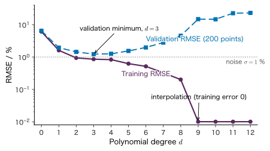
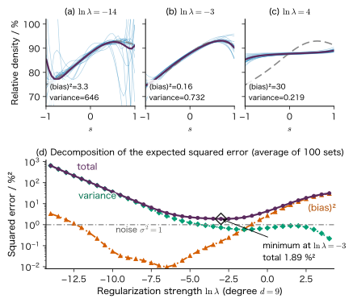
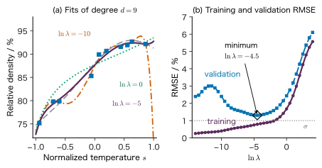
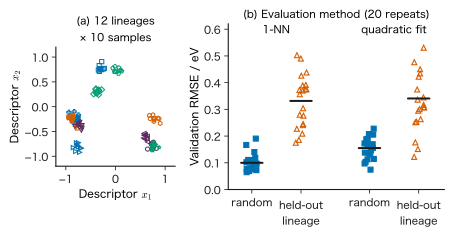

Chapter 6Generalization, Model Selection, and Regularization — Models That Predict Unseen Data
- Is a degree-9 polynomial that passes through all 10 measurements of firing temperature and relative density a better model than a cubic that misses the same 10 points by small amounts? Is a model that fits the training data perfectly a good model?
- What happens to the error estimate if test specimens cut from the same sintered body, or compounds from the same material lineage, appear in both the training data and the validation data? How should materials data be split to give an honest evaluation?
- Can we trust a prediction outside the temperature range of the training data (1100–1500 °C), for example at 1600 °C?
Suppose we make 10 sintered bodies at different firing temperatures and measure their relative densities. A curve passing through all 10 points can always be drawn with a polynomial of degree 9. The error on the training data is 0. But when we ask that curve to predict the relative density at other temperatures, it misses the true value by nearly 15 %, and sometimes even produces an “impossible density” far above 100 %. A cubic that misses the 10 points by small amounts, on the other hand, predicts correctly to within about 1 % at other temperatures too. Fitting the data at hand and predicting data not yet seen are different properties.
In this chapter we call this “property of predicting data not yet seen” generalization, and we learn how to measure it with a number (the generalization error), how to choose the complexity of a model (model selection), and how to hold a complex model in check (regularization). At the center is the idea of dividing the data into a “part used for learning” and a “part used for evaluation.” If the division is done wrongly, information that should be reserved for evaluation seeps into training (data leakage), and the performance looks better than it really is. In materials data, data from the same sample, the same batch, or the same material lineage resemble one another, so this pitfall is especially easy to fall into. Finally, we treat extrapolation beyond the training range, how to read an evaluation metric, and the distinction between prediction and causation.
- You can define the generalization error and the training error, and show, with an inequality and a simple calculation, why the training error tends to come out smaller than the generalization error (it is optimistically biased).
- You can read off overfitting from how the training error and the validation error move as the polynomial degree changes, and explain why the coefficients become huge.
- You can explain how the roles of the training, validation, and test data differ, and say why the test data may be used only once.
- You can derive the bias–variance decomposition of the squared loss, including why the cross term vanishes.
- You can compute $K$-fold cross-validation and leave-one-out by hand. You can explain the mechanism by which L2 regularization suppresses overfitting, and how to choose the regularization coefficient $\lambda$.
- You can spot data leakage from standardization, feature selection, imputation of missing values, and duplicate samples, and write the correct procedure that fits on the training data only.
- You can show numerically why materials data need to be split by group (lineage, sample, batch). You can explain extrapolation and covariate shift, the properties of MAE, RMSE, and $R^{2}$, and the difference between prediction and causation.
Sections for the introductory route: 6.1, 6.2, 6.3, 6.6, 6.7, 6.14. Sections marked “Detailed Route” may be skipped on a first reading.
6.1 Training Error and Generalization Error — The Data at Hand and Unseen Data
6.1.1 What we want to do
A machine-learning model determines its parameters using the data at hand (the training data). The purpose of building a model, however, is not to reproduce the training data but to predict the output for inputs that have not yet been measured. For example, for a model that predicts relative density from firing temperature, correctly guessing the densities of the 10 samples already fired is of no use. What is useful is to predict the density at the next temperature to be fired.
We therefore distinguish the quality of a model by two quantities.
- Training error: the mean deviation of the predictions on the training data. It can be computed from the data at hand.
- Generalization error: the expectation of the deviation of the predictions on newly generated data produced by the same mechanism as the training data. This is the one we really want to know, but because it involves unseen data it cannot be computed directly.
A small numerical example: measure 10 sintered bodies whose relative density varies with standard deviation $\sigma=1\ \%$, and use the sample mean $\bar{y}$ as the predicted value. The expectation of the mean squared error on those 10 samples (the training error) is $0.9\ \%^{2}$, whereas the expectation on an 11th, new sample (the generalization error) is $1.1\ \%^{2}$ (Example 6.1). Measured on the data at hand, the error looks small, and this gap grows as the model becomes more complex.
6.1.2 Definitions and notation
Suppose that the pairs $(\bm{x},y)$ of an input $\bm{x}\in\R^{D}$ and a target value $y\in\R$ are generated independently from some joint distribution $p(\bm{x},y)$. The training data $\data=\{(\bm{x}_n,y_n)\}_{n=1}^{N}$ are $N$ samples from this distribution (i.i.d.; Chapter 2, Section 2.8). How far the prediction $\hat{y}=f(\bm{x};\bm{w})$ of the model $f(\bm{x};\bm{w})$ deviates from the target value $y$ is measured by the loss $\ell(y,\hat{y})\ge 0$. In regression the squared loss $\ell(y,\hat{y})=(y-\hat{y})^{2}$ is often used (if $y$ is in %, the unit is $\%^{2}$).
Definition 6.1: Generalization error and training error
For a model $f$ with fixed parameters $\bm{w}$, the generalization error (also called the expected loss) is defined as
\begin{equation} \begin{aligned} R(f)&=\Ex_{(\bm{x},y)\sim p}\bigl[\ell\bigl(y,f(\bm{x})\bigr)\bigr]\\ &=\iint \ell\bigl(y,f(\bm{x})\bigr)\\ &\qquad\times p(\bm{x},y)\,\dd\bm{x}\,\dd y \end{aligned} \label{eq:6-genrisk} \end{equation}The expectation is taken over a single new pair $(\bm{x},y)$ generated independently of the training data. On the other hand, the training error (also called the empirical loss) is
\begin{equation} \hat{R}(f)=\frac{1}{N}\sum_{n=1}^{N}\ell\bigl(y_n,f(\bm{x}_n)\bigr) \label{eq:6-emprisk} \end{equation}For the squared loss, $\hat{R}$ is the mean squared error (MSE), and its square root is called the RMSE (root mean squared error).
If $f$ is determined independently of the data, Eq. \eqref{eq:6-emprisk} is an unbiased estimate of Eq. \eqref{eq:6-genrisk} (indeed $\Ex[\hat{R}(f)]=\frac1N\sum_n\Ex[\ell(y_n,f(\bm{x}_n))]=R(f)$, by the linearity of expectation, Chapter 2, Section 2.5). The problem is that in learning we choose $f$ using the same data $\data$.
6.1.3 The training error is optimistically biased
Write $\mathcal{F}$ for the set of candidate models (for example, “all polynomials of degree at most 3”). Learning means choosing the candidate that minimizes the training error,
$$ \hat{f}_{\data}=\argmin_{f\in\mathcal{F}}\hat{R}(f) $$(we attach a subscript to $\hat{f}_{\data}$ because it depends on the data $\data$). We also let $f^{\ast}=\argmin_{f\in\mathcal{F}}R(f)$ be the candidate that minimizes the generalization error. $f^{\ast}$ is determined by the distribution $p$ alone and does not depend on the data.
Theorem 6.1: The expected training error does not exceed the expected generalization error
In the setup above, writing $\Ex_{\data}$ for the expectation over how the data $\data$ turn out, we have
$$ \Ex_{\data}\bigl[\hat{R}(\hat{f}_{\data})\bigr]\ \le\ R(f^{\ast})\ \le\ \Ex_{\data}\bigl[R(\hat{f}_{\data})\bigr] . $$Proof
(i) Since $\hat{f}_{\data}$ minimizes the training error within $\mathcal{F}$, comparing it with $f^{\ast}$, which belongs to the same $\mathcal{F}$, we have $\hat{R}(\hat{f}_{\data})\le\hat{R}(f^{\ast})$ for every data set $\data$. Taking $\Ex_{\data}$ of both sides gives $\Ex_{\data}[\hat{R}(\hat{f}_{\data})]\le\Ex_{\data}[\hat{R}(f^{\ast})]$.
(ii) Since $f^{\ast}$ does not depend on the data, $\Ex_{\data}[\hat{R}(f^{\ast})]=R(f^{\ast})$, as seen in Section 6.1.2. Together with (i), this gives the left inequality.
(iii) Since $f^{\ast}$ minimizes the generalization error, $R(f^{\ast})\le R(\hat{f}_{\data})$ for every $\data$. Taking $\Ex_{\data}$ of both sides gives the right inequality.
∎
In other words, the error measured on the data used for learning is, on average, smaller than the error on new data. The training error is an “optimistic” estimate of the generalization error, and the gap between them (the degree of optimism) is determined by how well the model can fit the chance fluctuations of the training data. How much smaller it comes out can be seen concretely in the following calculation for a linear model.
Example 6.1: Training error and generalization error when predicting with the sample mean
Suppose that the relative densities $y_1,\dots,y_N$ are i.i.d. with $\Ex[y_n]=\mu$ and $\Var[y_n]=\sigma^{2}$. The model is the constant $f=\bar{y}=\frac1N\sum_n y_n$ (the sample mean). (1) Find the expectation of the training error $\hat{R}=\frac1N\sum_n(y_n-\bar{y})^{2}$. (2) Find the expectation of the squared error $(y-\bar{y})^{2}$ for a new sample $y$ (independent of $y_1,\dots,y_N$ and with the same distribution). (3) Find the values for $N=10$ and $\sigma=1\ \%$.
Solution. (1) $\hat{R}$ has the same form as the maximum likelihood estimate of the variance, $\sigma^{2}_{\mathrm{ML}}$, and as shown in Chapter 4, Section 4.2, $\Ex[\hat{R}]=\dfrac{N-1}{N}\sigma^{2}$. Here too we check it line by line. Split $y_n-\bar{y}=(y_n-\mu)-(\bar{y}-\mu)$, square, and sum, using $\sum_n(y_n-\mu)=N(\bar{y}-\mu)$:
$$ \begin{aligned} &\sum_{n}(y_n-\bar{y})^{2}\\ &=\sum_{n}(y_n-\mu)^{2}-2(\bar{y}-\mu)\sum_{n}(y_n-\mu)\\ &\qquad+N(\bar{y}-\mu)^{2}\\ &=\sum_{n}(y_n-\mu)^{2}-N(\bar{y}-\mu)^{2} . \end{aligned} $$Taking the expectation, since $\Ex[(y_n-\mu)^{2}]=\sigma^{2}$ and $\Ex[(\bar{y}-\mu)^{2}]=\Var[\bar{y}]=\sigma^{2}/N$ (Chapter 2, Section 2.8), we get $\Ex[\sum_n(y_n-\bar{y})^{2}]=N\sigma^{2}-\sigma^{2}=(N-1)\sigma^{2}$. Dividing by $N$ gives $\Ex[\hat{R}]=\frac{N-1}{N}\sigma^{2}$.
(2) We have $y-\bar{y}=(y-\mu)-(\bar{y}-\mu)$, and since the new $y$ is independent of $\bar{y}$, the expectation of the cross term is $-2\,\Ex[y-\mu]\,\Ex[\bar{y}-\mu]=0$. Hence $\Ex[(y-\bar{y})^{2}]=\sigma^{2}+\sigma^{2}/N=\frac{N+1}{N}\sigma^{2}$.
(3) For $N=10$ and $\sigma^{2}=1\ \%^{2}$, the expected training error is $0.9\ \%^{2}$ and the generalization error is $1.1\ \%^{2}$. Even with only one parameter ($\bar{y}$), the training error is smaller by $\sigma^{2}/N$ and the generalization error is larger by $\sigma^{2}/N$.
The result of Example 6.1 generalizes to a linear model with $M$ basis functions ($M=d+1$ for a polynomial of degree $d$). Fix the inputs $\bm{x}_1,\dots,\bm{x}_N$ (the situation of re-measuring at the same inputs), and suppose that the true function can be represented by the model and that the noise is independent with variance $\sigma^{2}$. Then
\begin{equation} \begin{aligned} \Ex\bigl[\hat{R}_{\mathrm{tr}}\bigr]&=\sigma^{2}\Bigl(1-\frac{M}{N}\Bigr),\\ \Ex\bigl[R_{\mathrm{new}}\bigr]&=\sigma^{2}\Bigl(1+\frac{M}{N}\Bigr) \end{aligned} \label{eq:6-optimism} \end{equation}Here $\hat{R}_{\mathrm{tr}}$ is the mean squared error on the training data, and $R_{\mathrm{new}}$ is the mean squared error for new measurements made again at the same inputs (the derivation, which uses the properties of $\bm{H}=\bm{\Phi}(\bm{\Phi}^{\tp}\bm{\Phi})^{-1}\bm{\Phi}^{\tp}$, is carried out in Exercise 6.1). For $M=1$ (a constant) it agrees with Example 6.1. As the number of parameters $M$ approaches the number of data points $N$, the training error approaches 0 and the generalization error approaches $2\sigma^{2}$. This is because the $M$ coefficients “memorize” $M$ worth of the noise.
6.2 Seeing Overfitting — Raising the Degree of a Polynomial
6.2.1 Data A and the polynomial model
We use Data A, “firing temperature and relative density,” as the regression example throughout this book (synthetic data for teaching purposes; it is not data of any real material). The firing temperature $T\in[1100,1500]$ °C is normalized to $s=(T-1300\ ^{\circ}\mathrm{C})/(200\ ^{\circ}\mathrm{C})\in[-1,1]$, and the true function is
\begin{equation} g(s)=88+8s-5s^{2}+2\sin 3s \label{eq:6-dataA} \end{equation}(in units of % of relative density). An observation is $y=g(s)+\varepsilon$, where $\varepsilon\sim\Normal(0,\sigma^{2})$ and $\sigma=1.0\ \%$. We draw 10 points of $s$ from the uniform distribution on $[-1,1]$ (random-number seed 20261112) and use them as the training data. For validation, we draw another 200 points from the same distribution (this is the same random-number sequence as in Simulator 6.1, so the numbers agree with those on the screen).
The model is a polynomial of degree $d$,
\begin{equation} \begin{aligned} f(s;\bm{w})&=88+w_0+w_1 s\\ &\qquad+\dots+w_d s^{d}\\ &=88+\sum_{j=0}^{d}w_j\phi_j(s) \end{aligned} \label{eq:6-poly} \end{equation}(the basis functions are $\phi_j(s)=s^{j}$). There are $M=d+1$ coefficients $w_0,\dots,w_d$, and $\bm{w}\in\R^{M}$. The constant 88 % is fixed as a baseline for the target value, and the coefficients are fitted to the target value $y-88\ \%$ (it is not a value computed from the data; with this choice, when the regularization of Section 6.6 pulls the coefficients toward 0, the curve approaches the horizontal line at 88 %). The coefficients are determined so as to minimize the training error (the sum of squares) (least squares; for how to solve it, see Chapter 8, Section 8.2).
6.2.2 Raising the degree to 0, 1, 3, and 9
The set of degrees 0, 1, 3, 9 was chosen following the polynomial curve-fitting example in Section 1.1 of Bishop (2006) (the data, the true function, and the subject matter are original to this book).

Let us go through Figure 6.1 starting from the upper left.
- $d=0$ (constant): It cannot express any change with temperature. It does not fit even the training data (training RMSE 6.10 %). A state in which the model is so simple that it cannot capture even the trend of the training data is called underfitting.
- $d=1$ (straight line): It captures the upward trend, but cannot express the curvature by which the density levels off on the high-temperature side (1.60 %).
- $d=3$: It nearly coincides with the true function. The training RMSE of 0.86 % is slightly smaller than the noise standard deviation of 1.0 % (by Eq. \eqref{eq:6-optimism}, for $M=4$ and $N=10$, the expectation of the training squared error is $\sigma^{2}\times0.6$, which is about 0.77 % as an RMSE).
- $d=9$: There are 10 coefficients and also 10 points, so there exists exactly one polynomial that passes through all 10 points (interpolation). The training RMSE is 0 (about $10^{-13}$, the rounding error of the computer), but the curve swings violently between the points and even produces physically impossible values of relative density such as −39 % and 181 %.
The $d=9$ curve has memorized even the noise in the training data. The phenomenon in which the fit to the training data improves while the prediction for new data gets worse is called overfitting.
Definition 6.2: Overfitting and underfitting
As the complexity of the model (the degree $d$ for a polynomial) is raised, the training error keeps decreasing, but the generalization error starts to rise at some point. The state after the generalization error has started to rise, in which the training error is small but the generalization error is large, is called overfitting; the state in which the model is too simple and both the training error and the generalization error are large is called underfitting.
6.2.3 Plotting the training RMSE and validation RMSE against the degree
The generalization error cannot be computed directly, but it can be estimated by the RMSE on the 200 points not used for training (the validation data). Figure 6.2 and Table 6.1 show the training RMSE and the validation RMSE side by side, with the training data fixed and the degree $d$ varied from 0 to 12.

| Degree $d$ | Number of coefficients $M$ | Training RMSE / % | Validation RMSE / % | $\max_j\abs{w_j}$ | Condition number of $\bm{\Phi}$ |
|---|---|---|---|---|---|
| 0 | 1 | 6.10 | 6.48 | 1.09 | 1 |
| 1 | 2 | 1.60 | 1.95 | 10.1 | 1.72 |
| 2 | 3 | 0.938 | 1.44 | 9.53 | 4.08 |
| 3 | 4 | 0.855 | 1.23 | 11.2 | 9.35 |
| 5 | 6 | 0.623 | 1.54 | 35.5 | 87.1 |
| 7 | 8 | 0.324 | 2.79 | 202 | 648 |
| 9 | 10 | $\approx 0$ | 14.8 | $3.16\times10^{3}$ | $2.33\times10^{4}$ |
The training RMSE decreases monotonically with the degree (the set of polynomials of degree $d$ contains the set of degree $d-1$, so the minimum training error never increases). The validation RMSE, on the other hand, is smallest at $d=3$, at 1.23 %, and at $d=9$ it is 14.8 %, worse by more than an order of magnitude. Note also that the validation RMSE does not become smaller than the noise standard deviation of 1 %. This is because the noise contained in a new measurement cannot be predicted by any model (see the item “noise” in Section 6.4).
6.2.4 When overfitting occurs, the coefficients become huge
As the second column from the right of Table 6.1 shows, the largest absolute value of the coefficients grows sharply as the degree is raised. The coefficients for $d=3$ and $d=9$ are listed in Table 6.2.
| $j$ | 0 | 1 | 2 | 3 | 4 | 5 | 6 | 7 | 8 | 9 |
|---|---|---|---|---|---|---|---|---|---|---|
| $d=3$ | −0.046 | 11.2 | −4.74 | −2.90 | — | — | — | — | — | — |
| $d=9$ | 0.058 | 37.0 | −169 | 133 | 901 | −1455 | −1516 | 3164 | 768 | −1989 |
The coefficients for $d=9$ are in the hundreds to thousands, with alternating signs. For $s\in[-1,1]$ we have $\abs{s^{j}}\le1$, so each term can be as large as several thousand %, but the huge positive and negative terms cancel each other, and at the 10 training points the result is exactly the observed value (75–93 %). The cancellation is tuned so that it holds only at the training data points, so between the points the cancellation breaks down and the curve swings widely. Huge coefficients are a sign of overfitting, and the regularization of Section 6.6 places a penalty on this very sign.
The condition number in the last column of Table 6.1 (Chapter 8, Section 8.5) expresses how much a small change in the data can move the coefficients; for $d=9$ it is $2.33\times10^{4}$. This is another view of the quantity that Section 6.4 measures as “variance.”
Example 6.2: A quadratic through three points and its sensitivity to noise
At the normalized temperatures $s=-1,0,1$, the relative densities $y=76.0,\ 88.5,\ 91.0\ \%$ were obtained (a numerical example for teaching purposes). (1) Find the quadratic $f(s)=a+bs+cs^{2}$ that passes through all three points. (2) Fit a straight line $f(s)=a'+b's$ by least squares and find the training RMSE. (3) Suppose that only the measured value at $s=1$ is shifted by $+1\ \%$ by noise and is $92.0\ \%$. By how much do the values of the quadratic in (1) at $s=0.5$ and $s=2$ change?
Solution. (1) $f(0)=a=88.5$. $f(1)=a+b+c=91.0$ and $f(-1)=a-b+c=76.0$. From the difference of the two equations, $2b=15.0$, so $b=7.5$. From the sum, $2a+2c=167.0$, so $c=83.5-88.5=-5.0$. Hence $f(s)=88.5+7.5s-5.0s^{2}$. Since it passes through the three points, the training error is 0.
(2) The mean of $s$ is 0, so the least-squares line has slope $b'=\sum_n s_n y_n\big/\sum_n s_n^{2}$ $=(-76.0+91.0)/2=7.5$ and intercept $a'=\bar{y}=(76.0+88.5+91.0)/3=85.17$. The fitted values are $77.67,\ 85.17,\ 92.67$, and the residuals are $-1.67,\ 3.33,\ -1.67$. The training RMSE is $\sqrt{(2.78+11.11+2.78)/3}$ $=\sqrt{5.56}\approx2.36\ \%$.
(3) Only the equation for $f(1)$ shifts by $+1$, so in the simultaneous equations of (1), $a$ does not change, $b+c$ changes by $+1$, and $-b+c$ is unchanged. Therefore $b$ and $c$ each change by $+0.5$. The change at $s=0.5$ is $0.5\times0.5+0.5\times0.25=0.375\ \%$, and at $s=2$ it is $0.5\times2+0.5\times4=3.0\ \%$. Noise of $1\ \%$ in a single point appears in the prediction amplified threefold outside the data (at $s=2$). A model that passes through the points is more easily thrown off by noise, and the effect grows the farther one is from the points.
Simulator 6.1: Polynomial regression and regularization
This simulator fits a polynomial to the training data of Data A and lets you check the training RMSE, the validation RMSE, and the magnitude of the coefficients as you change the degree, the number of data points, and the regularization strength. As in the text, the target value in the simulator is $y-88\ \%$, and, as a simplification, the regularization (Section 6.6) is applied to all coefficients including the constant term $w_0$.
Open in a separate window at full size →
Operate and Observe
- Look at the readout with the defaults just after opening (number of training data points $N=10$, noise standard deviation 1.0 %, polynomial degree $d=3$, “no regularization (λ = 0, least squares)” checked, random-number seed 20261112) → training RMSE 0.855 %, validation RMSE (200 points) 1.23 %, and the figure below shows “Validation minimum: d = 3.” The table of coefficients agrees with the $d=3$ row of Table 6.2.
- Move “polynomial degree d” to 0, 1, and 9 → the training RMSE and validation RMSE take the values in Table 6.1. At $d=9$, the training RMSE is almost 0, the validation RMSE is 14.8 %, the figure shows in red “The fit swings outside the frame (−39.2 to 181 %),” $\max_j\abs{w_j}$ is 3160 ($3.16\times10^{3}$), and the condition number of $\bm{\Phi}$ is 23300 ($2.33\times10^{4}$). Compare with the fact that the training error is 0 when $M=N$ in Eq. \eqref{eq:6-optimism}.
- With $d=9$ kept, increase the “number of training data points N” to 20 and 50 → the validation RMSE drops to 5.25 % and 1.13 % (with the same seed, the first 10 points do not change). If you return to $d=3$, then for $N=10,20,50$ it is 1.23, 1.24, and 1.11 %, hardly changing.
- Return to $N=10$, $d=9$, uncheck “no regularization,” and move “regularization strength ln λ” to −10, −5, and 0 → the validation RMSE is 2.40, 1.31, and 2.43 %, and $\max_j\abs{w_j}$ is 75.0, 12.8, and 5.89. Compare with Eq. \eqref{eq:6-ridge} and Figure 6.6 of Section 6.6. If you have changed the seed, return to 20261112 with “Reset to defaults,” not “Start over with the same seed.”
Questions After Operating
- Why does the training RMSE at $d=9$ become almost 0 in step 2? What happens for $d=10,11,12$, and what notice appears on the screen?
Sample answers
There are $d+1=10$ coefficients and also 10 training data points, so the design matrix $\bm{\Phi}$ becomes a nonsingular 10×10 matrix, and exactly one polynomial passing through all 10 points is determined (interpolation). For $d\ge10$, the number of coefficients exceeds the number of data points, and there are infinitely many solutions with zero training error. The simulator displays the solution with the smallest sum of squared coefficients (the minimum-norm solution) and indicates this together with “condition number ∞ (not enough columns).” The validation RMSE is 14.7–23.1 %, all of them far worse than the 1.23 % at $d=3$.
- Why does the validation RMSE get worse again when ln λ is increased to 0 in step 4?
Sample answers
If the penalty $\frac{\lambda}{2}\norm{\bm{w}}^{2}$ is too strong, all the coefficients are pulled toward 0, the curve approaches the horizontal line at 88 %, and it can no longer express even the curvature of the true function (underfitting). From the fact that the training RMSE also rises to 1.68 %, we see that the ability to fit the data itself has declined. In the language of Section 6.4, this is the state in which “the bias has increased.”
6.3 The Roles of the Training, Validation, and Test Data
6.3.1 Why we split the data into three
In Section 6.2 we measured the RMSE on the validation data and chose the degree $d=3$ that minimizes it. Choosing quantities that a person fixes before training (the polynomial degree, the regularization coefficient $\lambda$ of Section 6.6, and so on; these are called hyperparameters) and choosing the type of model on the basis of data is called model selection.
A caution is needed here. We chose the degree with the smallest validation RMSE among 13 candidate degrees, so the validation RMSE of 1.23 % for the chosen $d=3$ is also slightly optimistic, for the same reason as in Theorem 6.1. The validation data were used for the choice of “which degree to use,” so they are no longer completely “unknown data” for the chosen model. We therefore split the data into three parts (Figure 6.3).
Definition 6.3: Training data, validation data, and test data
- Training data: used to determine the parameters $\bm{w}$ (to minimize the loss).
- Validation data: used to choose the hyperparameters and the type of model. For each candidate, we measure on the validation data the error of the model trained on the training data, and compare the candidates.
- Test data: used only once, after all choices have been made, to estimate the generalization error of the final model. We must not choose the model again after looking at the test result.
The reason for using the test data only once is to avoid reintroducing the optimistic bias that arose with the validation data. If we look at the test result and choose again, saying “after all, let us take degree 4,” the test data become part of the validation data and no longer give an unbiased estimate. The generalization error presented in a paper or report must be a value measured on data that were never used in any choice.
6.3.2 Choosing the minimum value makes the result optimistic
We estimate how optimistic a choice made on validation data becomes, in the simplest case.
Example 6.3: Choosing the better of two models of equal ability
Suppose that the true generalization errors (mean squared errors) of models A and B are both $1.00$. Suppose that the values measured on the validation data scatter around the true values with standard deviation $0.10$ and follow mutually independent Gaussian distributions. If we choose the model with the smaller validation value and report that validation value as its performance, what is the expectation (expected value) of the reported value? The expectation of the smaller of two independent quantities that follow the same distribution $\Normal(\mu,s^{2})$ is $\mu-s/\sqrt{\pi}$ (we derive this in Exercise 6.8).
Solution. Substituting $\mu=1.00$ and $s=0.10$, we obtain $1.00-0.10/\sqrt{\pi}$ $=1.00-0.10/1.7725$ $=1.00-0.0564\approx0.944$. Whichever model we choose, the true generalization error is $1.00$, yet the reported value comes out about 6 % smaller on average. The more candidates there are, the larger the bias becomes (in the same setting with 20 candidates, numerical computation gives an expectation of about $0.81$). After trying many hyperparameters on the validation data, an evaluation on separately reserved test data is indispensable.
6.3.3 Rules of thumb for splitting
If there are several thousand data points or more, it is usual to split them 60:20:20 or 80:10:10. When there are only a few dozen data points, as in materials experiments, the error measured on the validation data itself scatters widely, so we use cross-validation (Section 6.5), in which the same data are used alternately for training and for validation. The split should be decided so as to “reproduce a situation that was not available for training.” A random split is acceptable only when the data are independent of one another and future data come from the same distribution (for data from the same sample or the same lineage, see Section 6.8; for data whose conditions change with time, see Chapter 22, Section 22.10).
6.4 The Bias–Variance DecompositionDetailed Route
6.4.1 Considering many data sets under the same conditions
We express the overfitting of Section 6.2 as a number, namely “the degree to which it is swayed by chance in the data.” The training data $\data$ arise probabilistically, so if we repeat the experiment under the same conditions (the same temperature range, the same number of points $N$, the same noise), we obtain a different data set, and the fitted curve changes as well. We therefore consider the expectation $\Ex_{\data}$ over the way the data set turns out. Fix one input $x$ (in the polynomial example, the normalized temperature $s$), and let
- $\hat{f}(x;\data)$ be the predicted value at $x$ of the model trained on the data set $\data$.
- $\bar{f}(x)=\Ex_{\data}[\hat{f}(x;\data)]$ be the mean of the predicted value over the way the data set turns out.
- $g(x)$ be the true function (the value without noise). A new observation is $y=g(x)+\varepsilon$ with $\Ex[\varepsilon]=0$ and $\Var[\varepsilon]=\sigma^{2}$, where $\varepsilon$ is independent of $\data$.
6.4.2 Derivation of the decomposition
Theorem 6.2: Bias–variance decomposition of the squared loss
For a fixed input $x$, the expectation of the squared error of the prediction for a new observation $y$ (the expectation over both the data set $\data$ and the new noise $\varepsilon$) is the sum of the following three terms.
Derivation
To shorten the notation, write $\hat{f}=\hat{f}(x;\data)$, $\bar{f}=\bar{f}(x)$, and $g=g(x)$. We split the error into three parts.
$$ y-\hat{f}=\underbrace{(g-\bar{f})}_{a}+\underbrace{(\bar{f}-\hat{f})}_{b}+\underbrace{\varepsilon}_{c} . $$Here $a$ is a constant (it depends on neither $\data$ nor $\varepsilon$), $b$ depends only on $\data$, and $c$ depends only on the new noise. Expanding the square gives
$$ (y-\hat{f})^{2}=a^{2}+b^{2}+c^{2}+2ab+2ac+2bc . $$We take the expectation of each term.
- $\Ex[a^{2}]=(g-\bar{f})^{2}$ (it is a constant, so it stays as it is).
- $\Ex[b^{2}]=\Ex_{\data}[(\hat{f}-\bar{f})^{2}]$ (this is exactly the definition of the variance).
- $\Ex[c^{2}]=\Ex[\varepsilon^{2}]=\Var[\varepsilon]+(\Ex[\varepsilon])^{2}=\sigma^{2}$.
- $\Ex[2ab]=2a\,\Ex_{\data}[\bar{f}-\hat{f}]$ $=2a\,(\bar{f}-\Ex_{\data}[\hat{f}])$ $=2a\,(\bar{f}-\bar{f})=0$. It vanishes because $\bar{f}$ is defined as the mean of $\hat{f}$.
- $\Ex[2ac]=2a\,\Ex[\varepsilon]=0$. It vanishes because the mean of the noise is 0.
- $\Ex[2bc]=2\,\Ex_{\data}[b]\,\Ex[\varepsilon]=0$. Because the new noise $\varepsilon$ is independent of the training data $\data$, the expectation of the product is the product of the expectations (Chapter 2, Section 2.5), and both factors are 0.
The three remaining terms are Eq. \eqref{eq:6-bv}.
∎
Eq. \eqref{eq:6-bv} holds at a single point $x$. The generalization error over the whole input space is obtained by averaging both sides over the input distribution $p(x)$ (written $\langle\cdot\rangle_x$ below).
The (bias)² is the amount by which the average prediction deviates from the true function (it is large when the model is too simple). The variance is the fluctuation of the prediction when the data set changes (it is large when the model is too flexible and fits the noise). The noise $\sigma^{2}$ is the fluctuation of the new observation itself, which no model can reduce (the aleatoric uncertainty of Chapter 4, Section 4.8).
Making the model more complex (raising the degree, weakening the regularization) decreases the bias and increases the variance; making it simpler does the opposite. Because of this trade-off between bias and variance (the bias–variance trade-off), the generalization error is smallest at an intermediate level of complexity.
6.4.3 Checking with many synthetic data sets
With synthetic data we can create as many data sets under the same conditions as we like. From Data A we draw $L=100$ data sets of $N=15$ points each (in order, from a single random-number sequence with random-number seed 20261112), and fit a polynomial of degree $d=9$ to each set with the regularization of Section 6.6. The result is Figure 6.4 ($L$ is the number of sets, a symbol distinct from the loss $L(\bm{w})$). Writing the fit of the $l$th set as $f^{(l)}(s)$, we estimate
\begin{equation} \begin{aligned} \bar{f}(s)&=\frac{1}{L}\sum_{l=1}^{L}f^{(l)}(s),\\ (\text{bias})^{2}&=\Bigl\langle\bigl(\bar{f}(s)-g(s)\bigr)^{2}\Bigr\rangle_{s},\\ \text{variance}&=\Bigl\langle\frac{1}{L}\sum_{l=1}^{L}\bigl(f^{(l)}(s)\\ &\qquad\quad-\bar{f}(s)\bigr)^{2}\Bigr\rangle_{s} \end{aligned} \label{eq:6-bv-est} \end{equation}Here $\langle\cdot\rangle_s$ is the average over the uniform distribution on $s\in[-1,1]$ (the same distribution as that of $s$ in the training data), computed with the midpoint rule at 200 points.

At $\ln\lambda=-14$ (almost no regularization) the thin lines scatter widely and the variance is $646\ \%^{2}$. At $\ln\lambda=4$ (strong regularization) the thin lines agree with one another (variance $0.219\ \%^{2}$) but all lie close to the horizontal line at 88 %, and the (bias)² is $30.1\ \%^{2}$. The total is smallest at $\ln\lambda=-3$, where it equals $0.161+0.732+1.00=1.89\ \%^{2}$ (1.38 % as an RMSE); to the left of this point the variance dominates, and to the right the bias dominates.
The estimate of the (bias)² contains an error (of magnitude about the variance $/L$) arising from having obtained $\bar{f}$ from a finite number $L$ of sets. Near $\ln\lambda=-14$, where the variance is in the hundreds, the value of the (bias)² is not very reliable.
Simulator 6.2: Bias and variance
This simulator creates $L$ data sets under the same conditions and overlays their fits, so that you can check how the (bias)², the variance, the noise, and their total change with the regularization strength and the degree. As in the main text, the symbols on the screen denote the fit of the $l$th set by $f^{(l)}(s)$ and the number of sets by $L$.
Open in a separate window at full size →
Operate and Observe
- With the defaults right after opening (horizontal axis “ln λ (degree d fixed)”, polynomial degree $d=9$, regularization strength ln λ = −3.0, number of training data points per set $N=15$, noise standard deviation 1.0 %, number of data sets $L=100$, seed 20261112), wait for the computation to finish → the readout shows (bias)² 0.161 %², variance 0.732 %², noise 1.00 %², and total 1.89 %², and “ln λ minimizing the total” appears as −3.0. Compare with the sum of the three terms of Eq. \eqref{eq:6-bv}. The last line of the readout, “Check”, is the difference obtained by subtracting the (bias)² and the variance from the directly computed $\langle(f^{(l)}-g)^{2}\rangle$ (a check of the decomposition identity without the noise term), and it is about $10^{-16}$ (rounding error).
- Move ln λ to −14 and to 4 → in the former, the variance of 646 %² dominates and the thin lines in the upper figure scatter widely. In the latter, the (bias)² of 30.1 %² dominates, and the thin lines agree with one another but depart from the true function (Figure 6.4).
- Switch the horizontal axis to “degree d (λ fixed)” (leaving λ = e−3) → the total is smallest at $d=3$ (0.137 + 0.429 + 1 = 1.57 %²). Then check “no regularization (λ = 0)” → the minimum is again at $d=3$ ((bias)² 0.0164, variance 0.524), but at $d=6$ the variance jumps to 804 %², and for $d\ge8$ the values are cut off at the top of the figure.
- Return the horizontal axis to “ln λ (degree d fixed)”, turn the regularization back on, and set the number of training data points per set $N$ to 50 → the minimum of the total moves to ln λ = −3.5, and the variance drops to 0.143 %². Verify that increasing the data decreases the variance.
Questions After Operating
- In step 3, with no regularization, why does the variance increase sharply as the degree is raised?
Sample answers
As the degree increases, the number of coefficients $d+1$ approaches $N=15$, and the coefficients become free to move widely to fit the noise. The condition number of the design matrix also grows, so a small difference in the data becomes a large difference in the coefficients, and the curve becomes quite different from one set to another. As $d+1\ge N$ is approached, the fit approaches interpolation, and the variance becomes larger by orders of magnitude.
- If the noise standard deviation is lowered to 0.2 %, in which direction do you expect the ln λ that minimizes the total to move? Verify this.
Sample answers
When the noise is small, the chance variation of the data is also small and the variance is small, so the variance does not increase easily even with weak regularization (small ln λ). The bias, on the other hand, does not depend on the noise. Therefore the minimum moves to the left (smaller ln λ). Indeed, when the noise standard deviation is set to 0.2 %, the minimum moves to ln λ = −6 ((bias)² 0.0099, variance 0.113, noise 0.04, total 0.163 %²). Regularization is a restraint against fitting the noise too closely, so the smaller the noise, the weaker it may be.
Example 6.4: Shrinkage estimation — a biased estimator can win
We estimate the true mean $\mu$ of the relative density of a sample sintered under certain conditions. The measurement is made $N=4$ times, independently, each with standard deviation $\sigma=1\ \%$. From past experience there is a baseline value $r$, and $\mu-r=1\ \%$ (in reality $\mu$ is unknown, but we give it here for the sake of computation). Consider the estimator $\hat{\mu}_c=r+c\,(\bar{y}-r)$ ($0\le c\le1$). Here $c=1$ is the sample mean itself, and $c\lt1$ is the sample mean shrunk toward the baseline value. (1) Find the bias and the variance of $\hat{\mu}_c$. (2) Find the expectation of the squared error $\Ex[(\hat{\mu}_c-\mu)^{2}]$ for $c=1,\ 0.8,\ 0.5$. (3) Find the $c$ that minimizes it.
Solution. (1) From $\Ex[\bar{y}]=\mu$ we have $\Ex[\hat{\mu}_c]=r+c(\mu-r)$. The bias is $\Ex[\hat{\mu}_c]-\mu=-(1-c)(\mu-r)$, and its square is $(1-c)^{2}(\mu-r)^{2}$. The variance is $\Var[c\bar{y}]=c^{2}\sigma^{2}/N$. In the same form as Eq. \eqref{eq:6-bv} (here there is no noise term),
$$ \begin{aligned} \Ex[(\hat{\mu}_c-\mu)^{2}]&=(1-c)^{2}(\mu-r)^{2}+\frac{c^{2}\sigma^{2}}{N}\\ &=(1-c)^{2}\times1+\frac{c^{2}}{4} . \end{aligned} $$(2) For $c=1$: $0+0.25=0.25$. For $c=0.8$: $0.04+0.16=0.20$. For $c=0.5$: $0.25+0.0625=0.3125$ (all in units of $\%^{2}$).
(3) Differentiating with respect to $c$ and setting the result to 0: $-2(1-c)+c/2=0$, so $c=2/2.5=0.8$. The minimum value is the $0.20$ of (2). The biased estimator slightly shrunk toward the baseline value ($c=0.8$) has a smaller squared error than the unbiased sample mean ($c=1$), because the reduction in variance outweighs the increase in the squared bias. The regularization of Section 6.6 does the same thing by shrinking the coefficients toward 0.
6.5 Cross-ValidationDetailed Route
6.5.1 $K$-fold cross-validation
When data are scarce, few points are left for the validation data, and the validation error itself fluctuates widely. Cross-validation is a method that uses the data alternately for training and validation, so that every point is used for validation exactly once.
Definition 6.4: $K$-fold cross-validation and leave-one-out
Divide the indices of the data $\data$ into $K$ non-overlapping groups (folds) $\mathcal{I}_1,\dots,\mathcal{I}_K$. Write $\hat{f}^{(-k)}$ for the model trained on everything except the $k$th fold, and call
\begin{equation} \begin{aligned} \mathrm{CV}_K&=\frac{1}{N}\sum_{k=1}^{K}\sum_{n\in\mathcal{I}_k}\ell\bigl(y_n,\\ &\qquad\qquad\hat{f}^{(-k)}(\bm{x}_n)\bigr) \end{aligned} \label{eq:6-cv} \end{equation}the error of $K$-fold cross-validation. Each point is evaluated by a model trained on data that do not contain that point. The case $K=N$ (leaving out one point at a time) is called leave-one-out cross-validation (LOO-CV).
$K=5$ or $10$ is commonly used. The training data in each run make up $(K-1)/K$ of the whole, so $\mathrm{CV}_K$ is somewhat pessimistic. Cross-validation estimates “the generalization error of a model built by this procedure”; it is not meant for choosing one model out of the $K$ models. Once the hyperparameters have been decided, the final model is the one retrained on all the data. Group cross-validation, which puts data from the same sample or the same lineage into the same fold, is treated in Section 6.8.
6.5.2 A shortcut for leave-one-out
For a linear model fitted by least squares, LOO-CV can be computed without retraining $N$ times. Let $r_n=y_n-\hat{y}_n$ be the residual when the model is fitted to all the data, and let $H_{nn}$ be the diagonal component of the matrix $\bm{H}$ of Section 6.1. Then the residual at point $n$ of the model trained with point $n$ left out is
\begin{equation} y_n-\hat{f}^{(-n)}(\bm{x}_n)=\frac{r_n}{1-H_{nn}} \label{eq:6-loo} \end{equation}(when $H_{nn}\lt1$; the same result appears in Chapter 7 of Hastie et al. (2009)). The derivation is as follows.
Derivation: Eq. \eqref{eq:6-loo}
Write $\bm{w}^{(-n)}$ for the coefficients obtained with point $n$ left out, and $\tilde{y}_n=f(\bm{x}_n;\bm{w}^{(-n)})$ for the prediction at that point $n$. Let $\tilde{\bm{y}}$ be the vector obtained from the target-value vector $\bm{y}$ by replacing only its $n$th component with $\tilde{y}_n$.
(i) $\bm{w}^{(-n)}$ is also the least-squares solution for the modified $\tilde{\bm{y}}$. For every $\bm{w}$ we have
$$ \begin{aligned} \norm{\tilde{\bm{y}}-\bm{\Phi}\bm{w}}^{2} &=\sum_{m\ne n}\bigl(y_m-\bm{w}^{\tp}\bm{\phi}(\bm{x}_m)\bigr)^{2}\\ &\qquad+\bigl(\tilde{y}_n-\bm{w}^{\tp}\bm{\phi}(\bm{x}_n)\bigr)^{2} \end{aligned} $$where the first term is minimized at $\bm{w}=\bm{w}^{(-n)}$ (by the definition of least squares with point $n$ left out) and the second term is 0 at $\bm{w}=\bm{w}^{(-n)}$ (by the definition of $\tilde{y}_n$).
(ii) The least-squares fitted values are the target values multiplied by $\bm{H}$, so $\bm{\Phi}\bm{w}^{(-n)}=\bm{H}\tilde{\bm{y}}$. Since $\tilde{\bm{y}}$ and $\bm{y}$ differ only in the $n$th component, its $n$th component is
$$ \begin{aligned} \tilde{y}_n&=\sum_{m}H_{nm}\tilde{y}_m\\ &=\sum_{m}H_{nm}y_m-H_{nn}y_n+H_{nn}\tilde{y}_n\\ &=\hat{y}_n-H_{nn}\,(y_n-\tilde{y}_n) . \end{aligned} $$(iii) Subtracting both sides from $y_n$ gives $y_n-\tilde{y}_n=r_n+H_{nn}(y_n-\tilde{y}_n)$, that is, $(1-H_{nn})(y_n-\tilde{y}_n)=r_n$, and Eq. \eqref{eq:6-loo} follows.
The argument in (i) does not change when the penalty $\frac{\lambda}{2}\norm{\bm{w}}^{2}$ is added, so the same formula holds for ridge regression (Section 6.6) with $\bm{H}=\bm{\Phi}(\bm{\Phi}^{\tp}\bm{\Phi}+\lambda\bm{I})^{-1}\bm{\Phi}^{\tp}$.
∎
$H_{nn}$ expresses “how strongly the observed value at point $n$ affects its own fitted value” (the leverage), and $\sum_n H_{nn}=\tr\bm{H}=M$. For points at the edge or isolated points, $H_{nn}$ is close to 1, and the residual when the point is left out swells greatly. For the constant model ($\hat{y}=\bar{y}$), $H_{nn}=1/N$, and we verify Eq. \eqref{eq:6-loo} directly in the next example.
Example 6.5: Computing leave-one-out by hand
The relative densities of four samples fired under the same conditions were $86,\ 88,\ 89,\ 91\ \%$. Take the model to be the constant $\hat{y}=$ (the mean of the training data). (1) Find the residual at each point in LOO-CV and the mean squared error. (2) Compare this with the mean squared training error when the model is fitted with the mean of all the data, and verify that the former agrees with the value obtained from Eq. \eqref{eq:6-loo} with $H_{nn}=1/N$.
Solution. (1) Leaving out 86, the mean of the rest is $(88+89+91)/3=89.333$, and the residual is $86-89.333=-3.333$. Similarly, leaving out 88 gives the mean $(86+89+91)/3=88.667$ and the residual $-0.667$. Leaving out 89 gives the mean $88.333$ and the residual $+0.667$. Leaving out 91 gives the mean $87.667$ and the residual $+3.333$. The mean squared error is $(11.111+0.444+0.444+11.111)/4$ $=23.111/4=5.778\ \%^{2}$ (RMSE 2.40 %).
(2) The mean of all the data is $88.5$, the training residuals are $-2.5,\ -0.5,\ 0.5,\ 2.5$, and the mean squared training error is $(6.25+0.25+0.25+6.25)/4=3.25\ \%^{2}$. In general, the mean with point $n$ left out is $\bar{y}_{(-n)}=(N\bar{y}-y_n)/(N-1)$, so
$$ \begin{aligned} y_n-\bar{y}_{(-n)}&=\frac{(N-1)y_n-N\bar{y}+y_n}{N-1}\\ &=\frac{N}{N-1}\,(y_n-\bar{y})=\frac{r_n}{1-1/N} . \end{aligned} $$For $N=4$, each residual is multiplied by $4/3$ (for example, $-2.5\times4/3=-3.333$), which agrees with (1). The mean of the squares is $(4/3)^{2}\times3.25=5.778$. Compared with the training error 3.25, LOO-CV is 1.78 times larger, which shows how optimistic the training error was.
6.5.3 LOO-CV on Data A, and the variability of cross-validation
For the 10 points of Section 6.2, we computed the LOO-CV RMSE for each degree and placed it alongside the RMSE on the 200-point validation data in Table 6.3.
| Degree $d$ | 0 | 1 | 2 | 3 | 4 | 5 | 6 |
|---|---|---|---|---|---|---|---|
| LOO-CV RMSE / % | 6.77 | 2.09 | 1.34 | 1.65 | 4.43 | 5.89 | 15.9 |
| Validation RMSE / % | 6.48 | 1.95 | 1.44 | 1.23 | 1.25 | 1.54 | 1.98 |
LOO-CV chooses $d=2$, while the 200-point validation data choose $d=3$. Moreover, for $d\ge4$ the LOO-CV is far larger than the validation RMSE. With only 10 points, when a point at the edge ($s=-0.94$ or $0.86$) is left out, the model must predict that point by extrapolation, and the higher the degree, the more widely it misses (these are the points whose $H_{nn}$ in Eq. \eqref{eq:6-loo} is close to 1). When data are scarce, the cross-validation value is itself a widely fluctuating estimate, and a choice made on a small difference (1.34 versus 1.65) is not reliable. Chapter 7 of Hastie et al. (2009) introduces the “one-standard-error rule,” which chooses the simplest model within one standard error of the minimum error.
6.5.4 Nested cross-validation
If hyperparameters are chosen by cross-validation and the same cross-validation error is then reported as the performance, the result is optimistic, for the same reason as in Example 6.3. When the data are so scarce that test data cannot be set aside separately, use nested cross-validation.
- Outer loop: divide the data into $K_{\mathrm{out}}$ folds. In each run, set aside one fold for evaluation.
- Inner loop: using only the remaining data, carry out $K_{\mathrm{in}}$-fold cross-validation and choose the hyperparameters (the degree $d$, $\lambda$, and so on).
- Retrain on all of the remaining data with the chosen setting, and measure the error on the evaluation fold that was set aside.
- Take the average of the errors over the $K_{\mathrm{out}}$ outer runs as the estimate of the generalization error “including the selection procedure.”
The setting chosen in each outer run may differ. What is being evaluated is not a particular setting but the whole procedure of “choosing a setting by inner cross-validation and then training.” Varma and Simon (2006) showed that if the cross-validation error used for the selection is reported as it is, the error can be considerably underestimated even when the data and the labels are unrelated, and that nesting gives an estimate close to the error on independent test data.
6.6 Regularization — Penalizing the Coefficients
6.6.1 L2 regularization (weight decay)
In Section 6.2 we saw that an overfitted polynomial has huge coefficients. So we add to the loss a penalty on the “magnitude of the coefficients” so that the coefficients do not become too large. This is called regularization. The most commonly used form adds the sum of squares of the coefficients, L2 regularization; in linear regression it is called ridge regression, and in neural networks it is also called weight decay.
Definition 6.5: The loss of ridge regression
For a design matrix $\bm{\Phi}\in\R^{N\times M}$, a vector of target values $\bm{y}\in\R^{N}$ (in this chapter's polynomial example, each component is $y_n-88\ \%$), and coefficients $\bm{w}\in\R^{M}$, minimize
\begin{equation} \begin{aligned} L(\bm{w})&=\frac12\norm{\bm{y}-\bm{\Phi}\bm{w}}^{2}\\ &\qquad+\frac{\lambda}{2}\norm{\bm{w}}^{2} \end{aligned} \label{eq:6-ridge} \end{equation}(written componentwise, $\frac12\sum_{n}\bigl(y_n-\bm{w}^{\tp}\bm{\phi}(\bm{x}_n)\bigr)^{2}$ $+\frac{\lambda}{2}\sum_{j}w_j^{2}$). We call $\lambda\ge0$ the regularization coefficient (a hyperparameter). The case $\lambda=0$ is least squares.
Differentiating Eq. \eqref{eq:6-ridge} with respect to $\bm{w}$ and setting the result equal to 0 (the componentwise calculation is in Chapter 8), we only need to solve
\begin{equation} (\bm{\Phi}^{\tp}\bm{\Phi}+\lambda\bm{I})\,\bm{w}=\bm{\Phi}^{\tp}\bm{y} \label{eq:6-ridge-sol} \end{equation}($\bm{I}$ is the $M\times M$ identity matrix). If $\lambda\gt0$, the matrix on the left-hand side is always invertible, and the solution is uniquely determined even when $M\gt N$. The mechanism is easy to see in one dimension.
Example 6.6: Ridge regression with one coefficient
Fit the model $f(x)=wx$ (one coefficient) to the three points $(x,y)=(1,\ 1.1)$, $(2,\ 1.9)$, $(3,\ 3.2)$ (a numerical example for teaching purposes). (1) Find the $w$ that minimizes the loss $L(w)=\frac12\sum_n(y_n-wx_n)^{2}+\frac{\lambda}{2}w^{2}$ as an expression in $\lambda$. (2) Find $w$ for $\lambda=0,\ 2,\ 14$. (3) Find the “shrinkage factor” that multiplies the least-squares solution.
Solution. (1) Differentiate $L$ with respect to $w$.
$$ \begin{aligned} \diff{L}{w}&=-\sum_{n}x_n(y_n-wx_n)+\lambda w\\ &=-\sum_n x_ny_n+w\Bigl(\sum_n x_n^{2}+\lambda\Bigr)=0 \end{aligned} $$gives $w_\lambda=\dfrac{\sum_n x_ny_n}{\sum_n x_n^{2}+\lambda}$. Since the second derivative $\sum_n x_n^{2}+\lambda\gt0$, this is a minimum.
(2) $\sum_n x_ny_n=1.1+3.8+9.6=14.5$ and $\sum_n x_n^{2}=1+4+9=14$. For $\lambda=0$: $14.5/14=1.036$. For $\lambda=2$: $14.5/16=0.906$. For $\lambda=14$: $14.5/28=0.518$.
(3) Since $w_\lambda=w_0\times\dfrac{\sum_n x_n^{2}}{\sum_n x_n^{2}+\lambda}$, the factor is $14/(14+\lambda)$, that is, $0.875$ for $\lambda=2$ and $0.5$ for $\lambda=14$. When $\lambda$ becomes as large as $\sum_n x_n^{2}$ (the “strength” with which the data determine the coefficient), the coefficient shrinks to half. In higher dimensions as well, the weaker the information from the data in a direction (the smaller the eigenvalue of $\bm{\Phi}^{\tp}\bm{\Phi}$ in that direction), the more strongly the coefficient is shrunk (Chapter 8, Section 8.6).
6.6.2 Applying regularization to the example of Section 6.2
Fitting a polynomial of degree $d=9$ to the 10 points of Section 6.2 while varying $\lambda$ gives Figure 6.6 and Table 6.4.

| $\ln\lambda$ | $\lambda$ | Training RMSE / % | Validation RMSE / % | $\max_j\abs{w_j}$ |
|---|---|---|---|---|
| ($\lambda=0$) | 0 | $\approx0$ | 14.8 | $3.16\times10^{3}$ |
| −10 | $4.54\times10^{-5}$ | 0.400 | 2.40 | 75.0 |
| −7 | $9.12\times10^{-4}$ | 0.614 | 1.54 | 20.1 |
| −5 | $6.74\times10^{-3}$ | 0.746 | 1.31 | 12.8 |
| −4.5 | $1.11\times10^{-2}$ | 0.786 | 1.31 | 11.9 |
| −3 | $4.98\times10^{-2}$ | 0.881 | 1.41 | 9.92 |
| 0 | 1 | 1.68 | 2.43 | 5.89 |
Merely introducing a very small $\lambda$ ($\ln\lambda=-10$, $\lambda\approx5\times10^{-5}$) lowers the maximum coefficient from 3164 to 75 and improves the validation RMSE from 14.8 % to 2.40 %. Near $\ln\lambda=-5$ the validation RMSE is 1.31 %, close to that of degree-3 least squares (1.23 %). Conversely, if $\lambda$ is made too large ($\ln\lambda=0$), the curve becomes flat and both the training RMSE and the validation RMSE get worse (underfitting). Like the degree $d$, $\lambda$ is a knob for the flexibility of the model; whereas the degree changes the “number of usable basis functions” discretely, $\lambda$ squeezes the degrees of freedom of the coefficients continuously.
With regularization in place, the result becomes less sensitive to the choice of degree. If we fix $\ln\lambda=-5$ and vary the degree, the validation RMSE stays within 1.25–1.36 % from $d=3$ to $d=12$ (without regularization it is 14.8 % at $d=9$).
Notation: Should the constant term (intercept) be penalized?
In practice, the constant term $w_0$ is often left unpenalized, and only $\sum_{j\ge1}w_j^{2}$ is penalized. If the constant term were penalized, the result would change with the location of the mean of the target values (that is, with the choice of units). The examples in this chapter and Simulator 6.1 use a simplification: a fixed 88 % is subtracted from the target values, and $w_0$ is penalized as well. For this reason, as $\lambda$ is increased the curve approaches the horizontal line at 88 %. If the constant term is not penalized, the curve approaches the horizontal line at the mean of the data, and the effect of $\lambda$ changes slightly (Chapter 8, Section 8.6).
6.6.3 How to choose $\lambda$
Since $\lambda$ is a hyperparameter fixed before training, we choose it using the validation data of Section 6.3 (or the cross-validation of Section 6.5).
We line up the candidates at equal intervals on a logarithmic scale (for example, $\ln\lambda=-14,-13.5,\dots,4$; the effect of $\lambda$ changes by orders of magnitude), find $\bm{w}$ from the training data for each candidate, measure the validation error, and choose the candidate with the smallest one. Then retrain with the chosen $\lambda$ on the training plus validation data, and evaluate once, on the test data. If the units of an input are changed, the magnitude of its coefficient changes, and the effect of the same $\lambda$ changes (for example, whether temperature is entered in °C or as the normalized $s$). When several inputs are used, it is usual to standardize them with the training data before regularizing (see Section 6.7 for notes on standardization).
Regularization can also be understood in the language of Bayesian inference. If we place a prior distribution $\Normal(\bm{w}\mid\bm{0},\sigma_w^{2}\bm{I})$ on the coefficients and carry out MAP estimation (Chapter 4), we obtain the same solution as ridge regression with $\lambda=\sigma^{2}/\sigma_w^{2}$ in Eq. \eqref{eq:6-ridge} (derived in Chapter 8, Section 8.7). L2 regularization is the prior knowledge that “the coefficients should not be that large,” turned into a formula.
6.6.4 L1 regularization (an introduction) and other regularization
The penalty made from the sum of the absolute values of the coefficients,
\begin{equation} \begin{aligned} L(\bm{w})&=\frac12\norm{\bm{y}-\bm{\Phi}\bm{w}}^{2}\\ &\qquad+\lambda\sum_{j}\abs{w_j} \end{aligned} \label{eq:6-lasso} \end{equation}is called L1 regularization; in linear regression it is called the lasso (Tibshirani, 1996). Whereas L2 makes all the coefficients smaller, L1 has the property of setting many coefficients to exactly 0. In the case of one coefficient (in the notation of Example 6.6, $S=\sum_n x_n^{2}$ and $z=\sum_n x_ny_n$), the solution is $w=\sgn(z)\max(\abs{z}-\lambda,\,0)/S$, and $w=0$ if $\abs{z}\le\lambda$ (this arises because $\abs{w}$ is not differentiable at $w=0$). It is used when we want to select the effective descriptors from a large number of candidate descriptors. The selected descriptors cannot be read as “causes” (Section 6.11).
In addition, early stopping, which stops training a neural network at the point where the validation error begins to rise (Chapter 7, Section 7.10), and even increasing the amount of data itself, also work to suppress overfitting.
6.7 Data Leakage — Evaluation Information Seeps into Training
6.7.1 What is data leakage?
In Section 6.3 we stated that test data must never be used for any selection. In practice, however, information from the validation or test data often flows into the training side without our noticing.
Definition 6.6: Data leakage
When information that would not be available in the actual use of a model (information derived from the values of the data used for evaluation, or from the very target value we want to predict) enters the process of training or model selection, we call it data leakage. With leakage, the validation error and test error are estimated to be smaller than the actual generalization error.
Leakage does not occur because someone tries to “cheat”; it arises naturally from the order of data preprocessing and from the way the data were collected. Kaufman et al. (2012) defined leakage systematically and recommended thinking separately about the time of training and the time of prediction. Kapoor and Narayanan (2023) reported that overestimation due to leakage has been found in studies using machine learning in many fields. Below we list four typical types.
6.7.2 Fitting the preprocessing on all the data
When we standardize the inputs (rescale them to mean 0 and standard deviation 1), if we compute the mean and standard deviation on all of the “training + validation + test” data and only then split, the values of the validation and test data are passed to the training side through the mean and standard deviation. The effect is small when there is plenty of data, but it appears when the data are few and the validation data contain an extreme value. The effect is larger when the preprocessing adapts strongly to the data.
- Feature selection: From many candidate descriptors, we choose those with a strong correlation with the target value. If this is done on all the data before the split, the target values of the validation data are used in the selection.
- Imputation of missing values: When we fill in missing values with the mean or with the values of nearby samples, if that mean or those neighbors are computed on all the data, the values of the validation data enter the imputed values of the training data.
We show by a numerical experiment (synthetic data for teaching purposes) how large the leakage from feature selection can be. For each of $N=50$ samples, we generate $P=1000$ descriptors and one target value, all as random numbers from mutually independent standard Gaussian distributions (seed 20261112). The target value is completely unrelated to the descriptors, so no model should be able to predict it, and in an honest evaluation the coefficient of determination $R^{2}$ (Section 6.10; the closer to 1 the better, and 0 or below means “the same as predicting with the mean, or worse”) should be 0 or below.
- Wrong procedure: Using all 50 samples, choose the 10 descriptors with the largest absolute correlation with the target value, and then perform linear regression with 5-fold cross-validation (Section 6.5; in each round, train on 40 samples and validate on 10) using those 10 descriptors → $R^{2}=0.46$.
- Correct procedure: Choose the 10 descriptors anew within the 40 training samples of each round, and predict the 10 validation samples with that model → $R^{2}=-0.44$.
Repeating with different random numbers 100 times, the mean of $R^{2}$ was 0.455 for the wrong procedure and $-0.470$ for the correct procedure, and the wrong procedure gave a “plausible” value $R^{2}\gt0.3$ in 93 of the 100 runs. With 1000 candidates, among 50 samples one always finds descriptors that happen to correlate with the target value. If the target values of the validation data are also used in the selection, those chance correlations are selected so that they hold on the validation data as well. Ambroise and McLachlan (2002) pointed out this selection bias in the classification of gene expression data and showed that the selection should be performed inside, not outside, the cross-validation.
6.7.3 The same thing appears in both training and validation
- Duplicate samples and repeated measurements: for example, values from measuring the same sample three times, or the same composition entered into a database in duplicate from different publications. When we split at random, for many points of the validation data there is an “almost identical point” in the training data, and the model predicts correctly merely by memorizing it (Example 6.7).
- Descriptors made from the target value: for example, to predict the relative density, if we put into the descriptors a porosity computed from the measured density, the prediction becomes perfect but is of no use whatsoever. Use as descriptors only quantities that are available at the time of actual prediction.
6.7.4 The correct procedure
Procedure: fit on the training data only, and merely apply to the validation data
- Split first. Before any preprocessing, split the data into training, validation (and test) sets. Keep duplicates and data from the same sample together on the same side (Section 6.8).
- Compute the preprocessing quantities from the training data only (fit). These include the mean and standard deviation for standardization, the mean or neighbors used to impute missing values, the result of feature selection, the axes of PCA, and so on.
- Transform the training data and the validation data with those quantities (transform). Do not recompute the mean or standard deviation from the validation data.
- Train the model on the training data and evaluate it on the validation data. In cross-validation, redo steps 2–4 inside each round (treat the preprocessing as part of the model).
- Use the test data once, at the very end. The quantities of step 2 are also computed from the data on which the final model is trained, and only applied to the test data.
Example 6.7: When duplicate samples get mixed into the validation data
Suppose that for compounds of new compositions, the true prediction error (RMSE) of a certain model is 0.40 eV. The database contains many compositions registered twice (as separate measurements, each with a measured-value standard deviation of 0.05 eV, and independent), and as a result of a random split, for half of the validation points the partner of the same composition ended up in the training data. Suppose that for compositions present in the training data, the model returns the measured value almost as it is. What RMSE is estimated in validation?
Solution. At a point whose partner is in the training data, the predicted value is the partner's measured value, so the error is the difference $\varepsilon-\varepsilon'$ of two independent measured values, whose variance is $0.05^{2}+0.05^{2}=0.005\ \mathrm{eV}^{2}$ (the variance of a sum in Chapter 2, Section 2.5). At the other half of the points, the expectation of the squared error is $0.40^{2}=0.16\ \mathrm{eV}^{2}$. The expectation of the mean squared error in validation is $0.5\times0.16+0.5\times0.005=0.0825\ \mathrm{eV}^{2}$, and the RMSE is $\sqrt{0.0825}\approx0.287\ \mathrm{eV}$. This looks about 30 % smaller than the true error of 0.40 eV. If we split with duplicates kept together on the same side (Section 6.8), this bias disappears.
Supplement: Handling tables with missing values
Tables of materials data often have blank cells (missing values). There are mainly three ways to handle them. (a) Drop the rows that have blanks. (b) Fill in the values (imputation: fill with the mean or median, with the values of nearby samples, or with predicted values from a regression). (c) After imputing, add to the features a 0/1 column indicating that the value was missing. Which is safe depends on how the values are missing (the classification of Little and Rubin (2019)).
- Missing completely at random: for example, forgetting to write down a record. Dropping the rows merely reduces the data and causes no bias.
- Missing depending on an observed quantity: for example, hardness measurements were skipped more often for samples fired at higher temperatures. If whether a value is missing is determined by the firing temperature alone, imputing with the firing temperature can reduce the bias.
- Missing depending on the missing value itself: for example, the strength of a sample that cracked before the test is not recorded. The weaker the sample, the more likely it is missing, so the remaining values make the strength look high, and imputing with the mean does not remove the bias. Record the reason for the missingness, and handle it with the column of (c) or with knowledge of the physics.
Numerical example (a numerical example for teaching purposes; no random numbers are used, and the values were chosen by hand for explanation): Let the true flexural strengths of 8 samples be 280, 310, 330, 350, 360, 380, 400, and 430 MPa, and suppose that the two below 320 MPa cracked before the test and are not recorded. The mean of the remaining 6 is $2250/6=375$ MPa, which is 20 MPa higher than the true mean $2840/8=355$ MPa. Even if we impute the two missing values with 375 MPa, the mean remains 375 MPa, and the sample standard deviation (dividing by $N-1$) shrinks from the true 48.7 MPa to 30.6 MPa.
The mean and regression formula used for imputation are also preprocessing quantities, so as in step 2 of the procedure above, they are determined from the training data only.
6.8 Splitting Materials Data — Do Not Straddle Samples, Batches, or LineagesDetailed Route
6.8.1 “Groups” in materials data
A random split gives an honest evaluation when the data points are independent of one another. Materials data contain clusters of mutually similar data (groups): the same sample (test specimens cut from one sintered body), the same batch (raw powder from the same lot, or samples fired in the same furnace on the same day), the same material lineage (a family of compounds with the same parent structure that differ only in the substituted element or the composition), and the same source (data from the same paper or laboratory).
Data in the same group share a “group-wide offset” in the target value. For example, samples from the same lot of raw material may all have a slightly lower density because of impurities that do not appear in the descriptors. When we split at random, every validation point has groupmates in the training data, so the model can memorize this shared offset and predict it correctly. In most cases, however, what we really want to know is the prediction performance for a new sample, a new batch, or a new material lineage.
Definition 6.7: Group split
Assign a group number to each data point and split the data so that points of the same group do not straddle training and validation; this is called a group split. The method that divides the data into $K$ folds in units of groups is called group $K$-fold cross-validation, and the method that sends one whole group to validation, repeating this for every group, is called leave-one-group-out. When no groups are given, the method that clusters the data in the descriptor space (Chapter 17) and takes the resulting clusters as the groups was called leave-one-cluster-out cross-validation (LOCO CV) by Meredig et al. (2018).
6.8.2 Comparing numerically: random split and group split
With the following synthetic data for teaching purposes, we examine how the evaluation differs between the two splits. There are 12 lineages of fictitious compounds, each with 10 compounds (120 in total), and each compound has two descriptors $\bm{x}=(x_1,x_2)$ (quantities normalized to be dimensionless) and a band gap $y$ (eV).
- Draw the center $\bm{c}_k$ of lineage $k=1,\dots,12$ from the uniform distribution on $[-1,1]^{2}$, and let the descriptors of a compound in the lineage be $\bm{x}=\bm{c}_k+$ (Gaussian random numbers with standard deviation 0.05 in each component).
- $y=h(\bm{x})+u_k+\varepsilon$, with $h(\bm{x})=1.8+0.6x_1-0.4x_2^{2}$ eV. Here $u_k\sim\Normal(0,0.20^{2})$ eV is the offset common to the lineage (for example, differences in structure that the descriptors cannot express), and $\varepsilon\sim\Normal(0,0.05^{2})$ eV is measurement noise.
- The random-number seed is $20261112+r$ (20 values, $r=0,1,\dots,19$).
We use two kinds of models.
- 1-NN (nearest-neighbor algorithm): use the $y$ of the training compound closest in the descriptor space directly as the predicted value.
- Quadratic least squares: linear regression with the six basis functions $1,x_1,x_2,x_1^{2},x_2^{2},x_1x_2$.
We evaluate in two ways: (i) 5-fold cross-validation, in which the 120 compounds are split at random into five folds, and (ii) leave-one-group-out, in which one whole lineage is held out at a time. The results are shown in Figure 6.8.

Averaged over the 20 runs, the RMSE of 1-NN is 0.100 eV for the random split and 0.332 eV when whole lineages are held out; for quadratic least squares the values are 0.155 eV and 0.341 eV, respectively. The value of 1-NN under the random split is smaller than the lineage offset (0.20 eV). This is because the training data contain groupmates of the same lineage right next to the compound being validated, and their $y$ contains the lineage offset $u_k$. When a whole lineage is held out, the groupmates disappear and the RMSE jumps to 0.33 eV. If we want to know the ability to predict a new lineage, the latter is the honest value. A difference also appears for an inflexible model such as the quadratic one. Even six coefficients can absorb, and thus memorize, part of the offsets of the 12 lineages.
Example 6.8: The error of 1-NN with and without groupmates
In the model of Section 6.8.2, suppose that the differences of the descriptors within a lineage are small and the difference in $h(\bm{x})$ can be neglected. (1) When the training data contain a compound of the same lineage as the compound being validated, and 1-NN uses its $y$ as the predicted value, find the expectation of the squared error and the RMSE. (2) Find the corresponding values when the training data contain no compound of the same lineage and the $y$ of a compound of another lineage $k'$ is used (neglect the difference in $h$).
Solution. (1) The validated compound has $y=h+u_k+\varepsilon$, and the groupmate used for the prediction has $y'=h+u_k+\varepsilon'$. The difference is $y-y'=\varepsilon-\varepsilon'$; since $\varepsilon,\varepsilon'$ are independent, the variance is $2\times0.05^{2}=0.005\ \mathrm{eV}^{2}$ and the mean is 0. The expectation of the squared error is $0.005\ \mathrm{eV}^{2}$, and the RMSE is $\sqrt{0.005}=0.071\ \mathrm{eV}$. The lineage offset $u_k$ cancels out and disappears.
(2) The compound used for the prediction has $y'=h+u_{k'}+\varepsilon'$. The difference is $(u_k-u_{k'})+(\varepsilon-\varepsilon')$; since all four quantities are independent, the variance is $2\times0.20^{2}+2\times0.05^{2}$ $=0.085\ \mathrm{eV}^{2}$ and the RMSE is $\sqrt{0.085}=0.29\ \mathrm{eV}$. The random split (mean 0.10 eV) and the lineage hold-out (mean 0.33 eV) in Figure 6.8 are close to (1) and (2), respectively (in practice they are slightly larger because of the difference in $h$ and because, even under the random split, some points have no groupmates nearby).
6.8.3 Which unit to split by
Decide the unit of the group by what is new in the situation where the model will be used. If we want to predict samples whose composition is slightly changed within a known lineage, we split within the lineage (keeping the same sample and the same batch together). If we want to search for a new lineage, we hold out whole lineages. If we want to predict the quality of next month's batch, we split by batch and, in addition, split in time order (Chapter 22, Section 22.10).
Depending on which split is used, the RMSE of the same model can differ by as much as a factor of three. When reporting, always state the method of splitting, not only the numbers.
6.9 Extrapolation and Distribution ShiftDetailed Route
6.9.1 There is no guarantee outside the training range
The discussion of generalization error so far assumed that new data come from the same distribution $p(\bm{x},y)$ as the training data. The training data of Data A are taken from the range 1100–1500 °C. What happens to the prediction outside this range, for example at 1600 °C (Figure 6.9)?

Inside the training range, both the degree-3 model and the regularized degree-9 model agree well with the true function, and the validation RMSE is 1.2–1.3 %. Outside the range, however, the two models make completely different predictions. The regularized degree-9 model predicts 187 % at 1600 °C (physically impossible), and the degree-3 model predicts 84.3 %, which is 2.5 % lower than the true value of 86.8 %. The data inside the range hardly constrain the behavior of the model outside the range, so no matter how well the model fits inside the range, nothing is guaranteed about its predictions outside.
Example 6.9: Predicting 1600 °C with the degree-3 model
Using the coefficients $(w_0,w_1,w_2,w_3)$ $=(-0.0461,\ 11.23,$ $-4.742,\ -2.898)$ for $d=3$ in Table 6.2, find the predicted value of the relative density at 1600 °C. Compare it with the true value $g(s)$. You may use $\sin 4.5=-0.9775$.
Solution. $s=(1600-1300)/200=1.5$. Substituting into Eq. \eqref{eq:6-poly}, the terms are $w_0=-0.0461$, $w_1s=11.23\times1.5=16.845$, $w_2s^{2}=-4.742\times2.25=-10.670$, and $w_3s^{3}=-2.898\times3.375=-9.781$. The sum is $-3.652$, and the predicted value is $88-3.652=84.35\ \%$. By Eq. \eqref{eq:6-dataA}, the true value is $g(1.5)=88+12-11.25+2\sin4.5$ $=88.75+2\times(-0.9775)=86.80\ \%$. The error is $-2.45\ \%$, which is twice the RMSE inside the range (about 1.2 %). The $s^{3}$ term satisfies $\abs{s^{3}}\le1$ inside the range but is amplified by a factor of 3.4 at $s=1.5$, so a slight deviation in a coefficient moves the prediction greatly.
6.9.2 Covariate shift
Extrapolation is the extreme case of the situation in which “the distribution of the inputs of new data differs from that of the training data.”
Definition 6.8: Covariate shift
The situation in which the input distribution $p_{\mathrm{tr}}(\bm{x})$ of the training data differs from the input distribution $p_{\mathrm{te}}(\bm{x})$ in the situation where the model is used, while the conditional distribution $p(y\mid\bm{x})$ of the target value given the input is the same, is called covariate shift.
The generalization error under covariate shift is obtained by replacing $p(\bm{x},y)$ in Eq. \eqref{eq:6-genrisk} with $p_{\mathrm{te}}(\bm{x})\,p(y\mid\bm{x})$. Where $p_{\mathrm{tr}}(\bm{x})\gt0$, multiplying and dividing lets us rewrite it as follows.
\begin{equation} \begin{aligned} R_{\mathrm{te}}(f)&=\iint\ell\bigl(y,f(\bm{x})\bigr)\,p_{\mathrm{te}}(\bm{x})\\ &\qquad\times p(y\mid\bm{x})\,\dd\bm{x}\,\dd y\\ &=\iint\frac{p_{\mathrm{te}}(\bm{x})}{p_{\mathrm{tr}}(\bm{x})}\\ &\qquad\times\ell\bigl(y,f(\bm{x})\bigr)\,p_{\mathrm{tr}}(\bm{x})\\ &\qquad\times p(y\mid\bm{x})\,\dd\bm{x}\,\dd y \end{aligned} \label{eq:6-covshift} \end{equation}The second line is an expectation under the distribution of the training data, so it can be estimated by multiplying the loss at each point by the weight $p_{\mathrm{te}}(\bm{x}_n)/p_{\mathrm{tr}}(\bm{x}_n)$ and averaging (Shimodaira (2000) proposed multiplying the log-likelihood used in training by this weight).
However, the rewriting in Eq. \eqref{eq:6-covshift} requires $p_{\mathrm{tr}}(\bm{x})\gt0$ wherever $p_{\mathrm{te}}(\bm{x})\gt0$. In a region with no training data at all (where $p_{\mathrm{tr}}=0$), such as 1600 °C, the weight cannot be defined and nothing can be corrected from the data. What supports the correctness of an extrapolation is not the data but only an assumption about the form of the model (for example, a functional form based on physical laws).
6.9.3 Deciding the applicability domain
When using a model, decide in advance the range of inputs for which the prediction may be trusted (the applicability domain). If there are few inputs, record the range of the training data and issue a warning outside it. If there are many inputs, each input may lie within its range and yet the combination may be far from the training data, so compare the distance to the nearest training data in the space of standardized descriptors with the distribution of distances among the training data themselves. A model that outputs the uncertainty of its predictions (Bayesian linear regression in Chapter 8, Gaussian process regression in Chapter 12) has a larger predictive variance away from the data, but the magnitude of that variance also depends on the assumptions of the model (depending on how the basis functions are placed, the uncertainty can, conversely, look smaller where there are no data; Chapter 8, Section 8.8).
6.10 Evaluation Metrics — MAE, RMSE, and the Coefficient of DeterminationDetailed Route
6.10.1 Definitions of the three metrics
We define three metrics that express the quality of a regression prediction as a single number. For validation (or test) data $\{(\bm{x}_n,y_n)\}_{n=1}^{N}$ and predicted values $\hat{y}_n$,
\begin{equation} \begin{aligned} \mathrm{MAE}&=\frac{1}{N}\sum_{n=1}^{N}\abs{y_n-\hat{y}_n},\\ \mathrm{RMSE}&=\sqrt{\frac{1}{N}\sum_{n=1}^{N}(y_n-\hat{y}_n)^{2}} \end{aligned} \label{eq:6-mae} \end{equation} \begin{equation} R^{2}=1-\frac{\sum_{n}(y_n-\hat{y}_n)^{2}}{\sum_{n}(y_n-\bar{y})^{2}} \label{eq:6-r2} \end{equation}Here $\bar{y}=\frac1N\sum_n y_n$ is the mean of the data used for the evaluation.
- MAE (mean absolute error) and RMSE have the same unit as the target value (% or eV) and express “how far off the predictions typically are.” RMSE counts large errors heavily by squaring them, so it is sensitive to outliers. The inequality $\mathrm{MAE}\le\mathrm{RMSE}$ always holds (the square of the mean of $\abs{e_n}$ is at most the mean of $e_n^{2}$, the same inequality as $\Var\ge0$ in Chapter 2, Section 2.5).
- The coefficient of determination $R^{2}$ is dimensionless and is the proportion by which the squared error has been reduced compared with predicting by the mean value $\bar{y}$. It equals 1 for a perfect prediction and 0 when predicting by the mean value.
6.10.2 Cautions in reading $R^{2}$
Dividing the numerator and denominator of $R^{2}$ by $N$, we can write $R^{2}=1-\mathrm{MSE}/s_y^{2}$ (where $s_y^{2}=\frac1N\sum_n(y_n-\bar{y})^{2}$ is the spread of the target values). Two cautions follow from this.
- It can be negative. When a least-squares fit (with a constant term) is made on the training data, $0\le R^{2}\le1$; on validation or test data, however, if the prediction is worse than the mean value, then $\mathrm{MSE}\gt s_y^{2}$ and $R^{2}\lt0$. The $R^{2}=-0.44$ of the correct procedure in Section 6.7 is an example.
- It tends to come out high for data with a wide range. Even for the same RMSE, $R^{2}$ is close to 1 for data in which the spread $s_y$ of the target values is large (Example 6.13). Comparing the $R^{2}$ of different data sets does not tell us which model is better or worse.
In a report, it is good to give RMSE or MAE with units, treat $R^{2}$ as auxiliary, and attach a scatter plot of predicted versus measured values. Classification metrics (accuracy, precision, recall, and so on) are treated in Chapter 9, Section 9.7.
Example 6.10: Computing MAE, RMSE, and $R^{2}$ by hand
For five validation data points, the relative densities were $y=(90,\ 92,\ 85,\ 88,\ 95)\ \%$ and the model's predictions were $\hat{y}=(91,\ 91,\ 87,\ 88,\ 93)\ \%$. (1) Find MAE, RMSE, and $R^{2}$. (2) Find $R^{2}$ when another model predicts $95\ \%$ for all five points.
Solution. (1) The errors $y-\hat{y}$ are $(-1,\ 1,\ -2,\ 0,\ 2)$. MAE is $(1+1+2+0+2)/5=1.2\ \%$. The sum of squares is $1+1+4+0+4=10$, so RMSE is $\sqrt{10/5}=\sqrt2\approx1.41\ \%$. We have $\bar{y}=(90+92+85+88+95)/5=90$ and $\sum_n(y_n-\bar{y})^{2}=0+4+25+4+25=58$. Thus $R^{2}=1-10/58=0.828$.
(2) The errors are $(-5,\ -3,\ -10,\ -7,\ 0)$ and the sum of squares is $25+9+100+49+0=183$. Then $R^{2}=1-183/58=-2.16$. Predicting by the validation-data mean of 90 % would be far better, and $R^{2}$ is negative.
6.11 Distinguishing Predictive Performance from CausationDetailed Route
6.11.1 A model that predicts well does not necessarily reveal the cause
A model with a small generalization error predicts well “new data produced by the same mechanism.” However, this does not necessarily tell us “how the output changes if we change the input.” The former can be achieved by using observed correlations, whereas the latter requires a causal relationship.
As an example, consider a model that predicts relative density from a simple inspection measuring the surface color (lightness) of a sintered body (Figure 6.10). Suppose that the actual temperature deviates from the set value depending on the location in the furnace (and is not recorded), that samples at hotter locations discolor more on the surface (their lightness decreases), and that at the same time their densification proceeds further, so that their relative density is higher. Then lightness and relative density are strongly correlated, and density can be predicted well from lightness. Yet it is not the case that “painting the surface of a sample dark raises its density.” Lightness is not the cause of density; both merely have a common cause, the actual temperature.
Definition 6.9: Confounding
When there is a third quantity $z$ that influences both the descriptor $x$ and the target value $y$, and a correlation other than a causal relationship therefore arises between $x$ and $y$, this is called confounding, and $z$ is called a confounder.
Example 6.11: Apparent slope due to confounding
We represent the situation of Figure 6.10 by the following model (all quantities standardized; a setting for teaching purposes). Let $z\sim\Normal(0,1)$, $x=z+n_x$, $y=2z+n_y$, $n_x\sim\Normal(0,0.25)$, $n_y\sim\Normal(0,1)$, where $z,n_x,n_y$ are independent. (1) Find the slope $\Cov[x,y]/\Var[x]$ and the correlation coefficient when $y$ is linearly regressed on $x$. (2) By how much does the expectation of $y$ change when $x$ is manipulated from outside and increased by 1 (with $z$ unchanged)?
Solution. (1) $\Var[x]=\Var[z]+\Var[n_x]$ $=1.25$. $\Cov[x,y]=\Cov[z+n_x,\ 2z+n_y]$ $=2\Var[z]=2$ (the covariance between independent quantities is 0). $\Var[y]=4\Var[z]+\Var[n_y]=4+1=5$. The slope is $2/1.25=1.6$, and the correlation coefficient is $2/\sqrt{1.25\times5}=2/2.5=0.8$.
(2) Since $y=2z+n_y$ does not contain $x$, manipulating $x$ does not change the expectation of $y$ (the change is 0). The regression slope 1.6 can be used for the prediction that “a sample with a large $x$ tends to have a large $y$,” but it is not the effect of an intervention, “changing $x$ changes $y$.” If $z$ had been measured, then in a regression with both $x$ and $z$ as inputs, the coefficient of $x$ would be 0.
6.11.2 Claiming causation
The most reliable approach is an intervention, that is, an experiment in which the descriptor is actually changed, the other conditions are held equal, and the assignment of samples is made random (if positions in the furnace are assigned randomly, the temperature deviation due to position is not systematically tied to either lightness or density). If we measure the conceivable confounders and include them in the model, the apparent correlation due to them can be removed, but unmeasured confounders cannot be removed. A framework for reasoning by representing causal relationships with graphs is found in Pearl (2009).
The “feature importance” of a machine learning model, and the descriptors retained by the L1 regularization of Section 6.6, show only that they “helped the prediction,” not that they are causes. To use them as a guideline for materials design (“increasing this descriptor raises the property”), support from one of the means above is needed.
6.12 Connections to Materials Engineering and Condensed Matter Physics — Claims of Discovery and the Design of EvaluationDetailed Route
When machine learning is used in materials research, whether a claim such as “the error of this model is 0.1 eV” or “we found a new material with this model” is correct depends almost entirely on how the evaluation is designed. In this section we apply the contents of Sections 6.8–6.9 to concrete situations in materials research.
Application: Predicting the density of a sintered body — test specimens, furnaces, and physical upper limits
When a powder compact is heated, the contacts between particles (necks) grow, the pores shrink, and the density rises (densification by sintering). The density cannot go beyond the state in which all pores have vanished (relative density 100 %), and at high temperature, grain growth can leave pores behind, so that the density may even decrease. The true function of Data A, Eq. \eqref{eq:6-dataA}, levels off on the high-temperature side in imitation of this behavior (these are synthetic data for teaching purposes, not measured values of any particular material).
When we build a prediction model with these data, the points to watch, matched to the equations of this chapter, are as follows.
- Groups of test specimens: If three test specimens are cut from one sintered body and their densities are measured, the three share a common offset of that sintered body (density unevenness of the compact, position in the furnace). Unless we use a group split (Definition 6.7) with the sintered body as the unit, the validation error looks as small as the difference between test specimens (the measurement variability) (Example 6.12).
- Furnaces and batches: Samples fired in the same furnace on the same day share the furnace's temperature offset. If we want to predict samples from another day or another furnace, we split with the firing batch as the unit.
- Extrapolation and physical upper limits: Outside the temperature range used for training, a polynomial has no guarantee (Figure 6.9) and can even give values above 100 %. Check whether the predictions lie in the physically possible range (0–100 %), and if necessary use a physically based functional form (for example, a rate equation for densification).
Application: How to evaluate the “discovery” of a new material
In studies that predict the properties of unknown compounds with a model learned from a database and select promising candidates, the following two kinds of “novelty” are at issue.
- Novelty in the descriptor space: What we want to find is not a permutation of a composition closely resembling the compounds in the training data, but a new lineage. Cross-validation with a random split overestimates performance because similar compounds are in the training data (Figure 6.8). Meredig et al. (2018) proposed LOCO CV, which leaves out whole clusters obtained by clustering in the descriptor space, and showed, for predictions such as the superconducting transition temperature, that evaluation with a random split can overestimate the performance of materials exploration. The same paper also recommends comparing with a simple baseline that merely returns the value of the nearest training data point (corresponding to the 1-NN of Section 6.8.2).
- Novelty in the target-value space: What we want to find is often a material whose property is higher than that of any compound in the training data. This is extrapolation with respect to the target value. In the evaluation, for example, we remove some of the compounds with the highest property values from the training data and check whether the model can pick them out as top-ranked.
A report should include (1) the unit of the split, (2) the fact that the test data were not used for selection, (3) a comparison with a simple baseline, and (4) whether the candidates lie outside the range of the training data.
Example 6.12: Three test specimens from one sintered body
From each of 30 sintered bodies, three test specimens were cut, and the relative densities of the 90 specimens in total were measured. The standard deviation of the offset common to each sintered body is 1.0 %, and the standard deviation of the specimen-to-specimen variability within the same sintered body (cutting and measurement) is 0.3 %; suppose that all of these are independent. (1) When the 90 specimens are randomly divided into five sets of 18 each, for a given validation specimen, find the probability that both of the remaining two specimens from the same sintered body fall into the same set (the validation side), and the probability that at least one of them falls into the training data. (2) Find the RMSE when the model returns the value of a specimen from the same sintered body (the case where a companion is in the training data) and when it returns the value of a different sintered body (the case of a group split).
Solution. (1) The set containing the validation specimen has 17 remaining slots, and they are filled from the 89 specimens other than itself. The probability that the first companion falls into these slots is $17/89$, and given that, the probability that the second also falls in is $16/88$. The probability that both fall into the same set is $\dfrac{17}{89}\times\dfrac{16}{88}=0.0347$. The probability that at least one falls into the training data is $1-0.0347=0.965$. Almost every validation specimen has a companion on the training side.
(2) When the value of a companion is returned, the error is the difference of the specimen-to-specimen variabilities, and the variance is $2\times0.3^{2}=0.18\ \%^{2}$, so the RMSE is $\sqrt{0.18}=0.42\ \%$. When the value of a different sintered body is returned, the difference of the sintered-body offsets is added as well, and the variance is $2\times1.0^{2}+2\times0.3^{2}=2.18\ \%^{2}$, so the RMSE is $\sqrt{2.18}=1.48\ \%$. The evaluation with a random split makes the error for a new sintered body look smaller by a factor of about 3.5.
6.13 Common Misconceptions and Limits of ApplicabilityDetailed Route
Caution: A training error of 0 is not “perfect”
As long as the measurements contain noise, the error on a new observation cannot be made smaller than the noise variance $\sigma^{2}$ (Eq. \eqref{eq:6-bv}). When the training error is much smaller than $\sigma^{2}$, there is a suspicion that the model has memorized the noise. As in Eq. \eqref{eq:6-optimism}, when the number of parameters approaches the number of data points, the training error tends to 0, but the generalization error, on the contrary, becomes larger.
Caution: Do not report the validation error used for selection as performance
If we choose the candidate with the smallest validation error among many candidates (degrees, $\lambda$, types of model, sets of descriptors), that minimum is optimistically biased (Example 6.3). The more candidates there are, the larger the bias. To report performance, use test data that were not used for selection, or nested cross-validation (Section 6.5.4). If we change the settings after looking at the test results, those test data have become validation data.
Caution: Cross-validation does not prevent leakage
Cross-validation only automates the way of splitting, and if preprocessing is done on all the data before the split, leakage occurs (the example of $R^{2}=0.46$ in Section 6.7.2). Moreover, if there are data from the same sample or the same lineage, random cross-validation becomes optimistic (Section 6.8). Redo the preprocessing inside each fold, and decide the unit of the split by “what is new.”
Caution: Stronger regularization is not automatically safer
Increasing $\lambda$ reduces the variance but increases the bias and leads to underfitting (the right side of Figure 6.6(b)). Also, regularization does not make the behavior outside the training range correct (the dash-dotted line in Figure 6.9). Choose $\lambda$ with validation data, and treat the problem of extrapolation with the applicability domain (Section 6.9.3).
Example 6.13: The same error, but different $R^{2}$
The same model made predictions, and the validation RMSE was 1 % in both cases. Find the $R^{2}$ for (1) data from a narrow temperature range, where the standard deviation of the target value $s_y$ is 1.5 %, and (2) data from a wide temperature range, where $s_y=6\ \%$.
Solution. $R^{2}=1-\mathrm{MSE}/s_y^{2}=1-\mathrm{RMSE}^{2}/s_y^{2}$. (1) $1-1/1.5^{2}=1-0.444=0.556$. (2) $1-1/6^{2}=1-0.028=0.972$. Although the prediction error is exactly the same, the data with the wider range have a far higher $R^{2}$. $R^{2}$ expresses “how small the error is compared with the variability of the data,” and is not the magnitude of the error itself. Problems of leakage and extrapolation do not show up in $R^{2}$ either, so a high $R^{2}$ is not evidence of a good model.
6.14 Summary, Link to the Next Chapter, Exercises, and References
6.14.1 Summary
- Generalization: what we want to know is the expected loss on new data \eqref{eq:6-genrisk}. The training error is optimistically biased (Theorem 6.1), and for a linear model its magnitude is proportional to $M/N$ \eqref{eq:6-optimism}.
- Overfitting: as the complexity increases, the training error keeps decreasing while the validation error becomes U-shaped. An overfitted model has huge coefficients and swings widely outside the data.
- The roles of data: use training to decide the parameters and validation to decide the hyperparameters, and use the test data only once, at the very end. With little data, use cross-validation \eqref{eq:6-cv}; to separate selection from evaluation, nest it.
- Bias–variance decomposition \eqref{eq:6-bv}: the cross term vanishes by the definition of the mean, the zero mean of the noise, and independence. Regularization \eqref{eq:6-ridge} is a knob that reduces variance and increases bias, and $\lambda$ is chosen by validation.
- Leakage, splits, extrapolation, metrics, and causation: fit preprocessing on the training data only, and do not let the same sample, batch, or lineage straddle training and validation. Outside the training range there is no guarantee. $R^{2}$ depends on the range and can be negative. A descriptor that predicts well is not necessarily the cause.
6.14.2 Link to the next chapter
In this chapter we treated the parameters that minimize the loss as something that “can be found,” and discussed whether they generalize. For ridge regression with polynomials, the minimizer is obtained by solving the simultaneous equations in Eq. \eqref{eq:6-ridge-sol}; but for complex models such as neural networks, the minimizer of the loss cannot be written as a formula, and we must follow the gradient and descend little by little. In the next chapter, Chapter 7, we learn gradient descent and its relatives, the conditions on the learning rate and convergence, the relation between regularization and constrained optimization, and the difference between “being able to minimize the loss” and “generalizing” (early stopping). The ideas of overfitting, regularization, and data splitting from this chapter are used repeatedly in the linear regression of Chapter 8, the Gaussian process regression of Chapter 12, the neural networks of Chapters 14–15, and the comprehensive exercise on materials search in Chapter 28.
6.14.3 Exercises
Exercise 6.1: Size of the optimism of the training error (derivation and computation)
(0) For a design matrix $\bm{\Phi}\in\R^{N\times M}$ (with linearly independent columns) and $\bm{H}=\bm{\Phi}(\bm{\Phi}^{\tp}\bm{\Phi})^{-1}\bm{\Phi}^{\tp}$, show that $\bm{H}\bm{\Phi}=\bm{\Phi}$, $\bm{H}^{\tp}=\bm{H}$, $\bm{H}^{2}=\bm{H}$, and $\tr\bm{H}=M$, and derive Eq. \eqref{eq:6-optimism} under $\bm{y}=\bm{\Phi}\bm{w}_0+\bm{\varepsilon}$ ($\Cov[\bm{\varepsilon}]=\sigma^{2}\bm{I}$) with fitted values $\hat{\bm{y}}=\bm{H}\bm{y}$. In what follows, consider a linear model with fixed inputs, where the true function can be represented by the model and the noise standard deviation is $\sigma=0.5\ \%$. The model is fitted to $N=20$ data points. (1) When there are $M=4$ coefficients, find, using Eq. \eqref{eq:6-optimism}, the mean squared training error and the expectation of the mean squared error for new measurements at the same inputs. (2) Find the same quantities for $M=10$. (3) For $M=4$, the residual sum of squares was $3.2\ \%^{2}$. Find the unbiased estimate of the noise standard deviation (the square root of the unbiased estimate of the variance), and compare it with the value obtained by dividing by $N$.
Hint: For (0), use the fact that the residual is $(\bm{I}-\bm{H})\bm{\varepsilon}$ and that $\Ex[\bm{\varepsilon}^{\tp}\bm{A}\bm{\varepsilon}]=\sigma^{2}\tr\bm{A}$ for a constant matrix $\bm{A}$. For (3), use the by-product of (0) that the expectation of the residual sum of squares is $\sigma^{2}(N-M)$.
Exercise 6.2: Shrinkage estimation and one-dimensional ridge regression (derivation)
(1) For $\hat{\mu}_c=r+c(\bar{y}-r)$ in Example 6.4, find the $c^{\ast}$ that minimizes the expected squared error, and the minimum value, in terms of $\Delta=\mu-r$, $\sigma^{2}$, and $N$. (2) For the model $f(x)=wx$ of Example 6.6, suppose the data arise from $y_n=w^{\ast}x_n+\varepsilon_n$ ($x_n$ is fixed, and the $\varepsilon_n$ are independent with mean 0 and variance $\sigma^{2}$). Let $S=\sum_n x_n^{2}$. Find the bias and variance of the ridge solution $w_\lambda=\sum_n x_ny_n/(S+\lambda)$, and show that the $\lambda$ that minimizes $\Ex[(w_\lambda-w^{\ast})^{2}]$ is $\sigma^{2}/(w^{\ast})^{2}$.
Hint: For (2), use $\Ex[\sum_n x_ny_n]=w^{\ast}S$ and $\Var[\sum_n x_ny_n]=\sigma^{2}S$, and differentiate with respect to $\lambda$.
Exercise 6.3: Three-fold cross-validation and leave-one-out (computation)
The band gap of a thin film was measured in six depositions, giving $2.1,\ 2.5,\ 1.8,\ 2.9,\ 2.2,\ 2.6\ \mathrm{eV}$ (a numerical example for teaching purposes). The model is a constant (the mean of the training data). (1) Take the 1st and 2nd values, the 3rd and 4th values, and the 5th and 6th values as three groups, and find the mean squared error of the three-fold cross-validation. (2) Find the mean squared error of LOO-CV, and verify that it agrees with the mean squared training error multiplied by $(N/(N-1))^{2}$.
Hint: For (2), use the relation of Example 6.5, $y_n-\bar{y}_{(-n)}=\frac{N}{N-1}(y_n-\bar{y})$.
Exercise 6.4: Duplicates in a database and splitting (a materials topic)
A database of compound band gaps has 200 rows. Of these, 60 compositions are registered twice each from separate publications (120 rows in total), and 80 compositions are registered only once. The rows are randomly split into 160 rows (training) and 40 rows (validation). (1) Of the 40 validation rows, find the expected number of rows whose partner with the same composition is in the training data. Take the probability that the partner falls on the training side to be $160/199$. (2) Suppose the true RMSE of the model for a new composition is 0.35 eV, the two measurements of the same composition each scatter independently with a standard deviation of 0.04 eV, and for rows whose partner is in the training data the model returns the partner's value. Find the expectation of the RMSE estimated by validation (the square root of the expectation of the mean squared error). (3) State two things that should be done before splitting in order to obtain an honest evaluation.
Hint: (1) Each of the 120 duplicated rows enters the validation set with probability $40/200$. (2) is the same computation as Example 6.7.
Exercise 6.5: Extrapolating the band gap of a mixed crystal from half of the composition range (a materials topic)
The true function of Data B in this book (the band gap of a hypothetical mixed crystal A$_{1-x}$B$_x$C; synthetic data for teaching purposes) is $E_g(x)=(1-x)\,1.20+x\,2.40-0.80\,x(1-x)$ eV. Measurements were made only over the composition range $x\in[0,0.5]$ (ignore the noise, and suppose that sufficiently many measurements were made uniformly over $[0,0.5]$). (1) Rewrite $E_g(x)$ as a quadratic in $x$. (2) Find the least-squares line $a+bx$ over $[0,0.5]$ (the one that minimizes the integral of the squared error, $\int_0^{0.5}(E_g-a-bx)^{2}\dd x$). (3) Find the error of the line inside the range ($x=0,0.25,0.5$) and the error at $x=1$ (the BC end), and compare them with the noise standard deviation of 0.03 eV. (4) From this result, state the caution to be exercised when widening the composition range to predict a new mixed crystal.
Hint: The line that best approximates $x^{2}$ on $[0,h]$ is $hx-h^{2}/6$ (verify this by writing the normal equations as integrals).
Exercise 6.6: Negative coefficient of determination (computation)
The band gaps at four test data points are $y=(3.0,\ 3.4,\ 2.8,\ 3.6)\ \mathrm{eV}$. (1) Model A predicted $3.3$ eV for all four points. Find the MAE, RMSE, and $R^{2}$. (2) The predictions of model B were $(3.1,\ 3.3,\ 2.9,\ 3.4)$ eV. Find the same three metrics. (3) Explain why $R^{2}$ of model A became negative, in terms of the meaning of the denominator in the definition of $R^{2}$.
Hint: The $\bar{y}$ in $R^{2}$ is the mean of the test data, $3.2$ eV.
Exercise 6.7: Surface color and density (discussion; a materials topic)
In the example of Section 6.11, for standardized quantities, suppose $z\sim\Normal(0,1)$ (the actual deviation of the furnace temperature), $x=0.8z+n_x$ (the standardized surface lightness with its sign reversed), $y=1.5z+n_y$ (the standardized relative density), $n_x\sim\Normal(0,0.36)$, $n_y\sim\Normal(0,0.75)$, and that $z,n_x,n_y$ are independent (a setting for teaching purposes). (1) Find $\Var[x]$, $\Cov[x,y]$, $\Var[y]$, the slope of the regression of $y$ on $x$, and the correlation coefficient. (2) If we also measure $z$ and regress $y$ on both $x$ and $z$, what is the coefficient of $x$? State the reason. (3) Design one experiment to check “whether lightness is a cause of density.” (4) Is a model that predicts density from lightness useful as a tool for quality inspection? What conditions are needed for it to be useful?
Hint: For (2), consider $\Ex[y\mid x,z]$. For (4), consider the meaning of “new data arising from the same mechanism.”
Exercise 6.8: Expectation of the smaller of two candidates (derivation)
Show that $\Ex[\min(a,b)]=\mu-s/\sqrt{\pi}$ when $a,b$ independently follow $\Normal(\mu,s^{2})$. Using this, explain why the bias in Example 6.3 is proportional to the spread $s$ of the validation errors of the candidates.
Hint: $\min(a,b)=\dfrac{a+b}{2}-\dfrac{\abs{a-b}}{2}$. We have $a-b\sim\Normal(0,2s^{2})$, and if $u\sim\Normal(0,\sigma_u^{2})$ ($\sigma_u$ is the standard deviation of $u$), then $\Ex\abs{u}=\sigma_u\sqrt{2/\pi}$.
6.14.4 References
- C. M. Bishop, Pattern Recognition and Machine Learning, Springer (2006) (Chapter 1 treats polynomial fitting, overfitting, and model selection; Chapter 3 treats regularization and the bias–variance decomposition).
- T. Hastie, R. Tibshirani, J. Friedman, The Elements of Statistical Learning: Data Mining, Inference, and Prediction, 2nd ed., Springer (2009) (Chapter 7, “Model Assessment and Selection,” treats the estimation of generalization error, cross-validation, and its pitfalls in detail).
- M. Stone, "Cross-Validatory Choice and Assessment of Statistical Predictions", Journal of the Royal Statistical Society: Series B (Methodological) 36, 111–147 (1974) (the classic on selection and evaluation by cross-validation).
- S. Geman, E. Bienenstock, R. Doursat, "Neural Networks and the Bias/Variance Dilemma", Neural Computation 4, 1–58 (1992) (discusses the trade-off between bias and variance in the context of neural networks).
- R. Tibshirani, "Regression Shrinkage and Selection via the Lasso", Journal of the Royal Statistical Society: Series B (Methodological) 58, 267–288 (1996) (L1 regularization).
- S. Varma, R. Simon, "Bias in error estimation when using cross-validation for model selection", BMC Bioinformatics 7, 91 (2006), doi:10.1186/1471-2105-7-91 (nested cross-validation).
- C. Ambroise, G. J. McLachlan, "Selection bias in gene extraction on the basis of microarray gene-expression data", Proceedings of the National Academy of Sciences of the USA 99, 6562–6566 (2002) (the bias caused by performing feature selection outside cross-validation).
- S. Kaufman, S. Rosset, C. Perlich, O. Stitelman, "Leakage in data mining: Formulation, detection, and avoidance", ACM Transactions on Knowledge Discovery from Data 6(4), 1–21 (2012), doi:10.1145/2382577.2382579 (definition and avoidance of data leakage).
- S. Kapoor, A. Narayanan, "Leakage and the reproducibility crisis in machine-learning-based science", Patterns 4, 100804 (2023), doi:10.1016/j.patter.2023.100804 (cases and a taxonomy of leakage in many fields).
- R. J. A. Little, D. B. Rubin, Statistical Analysis with Missing Data, 3rd ed., Wiley (2019) (a classification of how missing values arise, and their treatment by imputation and by likelihood).
- B. Meredig et al., "Can machine learning identify the next high-temperature superconductor? Examining extrapolation performance for materials discovery", Molecular Systems Design & Engineering 3, 819 (2018), doi:10.1039/C8ME00012C (leave-one-cluster-out cross-validation and the evaluation of extrapolation performance in materials search).
- H. Shimodaira, "Improving predictive inference under covariate shift by weighting the log-likelihood function", Journal of Statistical Planning and Inference 90, 227–244 (2000) (covariate shift and weighting).
- J. Pearl, Causality: Models, Reasoning, and Inference, 2nd ed., Cambridge University Press (2009) (causal inference by causal graphs and interventions).